本《金刚经》讲解参考了中华书局出版的十三经套书，只讲重点内容，在套书中已有的总序和前言等内容不再重复。
看我讲经一定要先把我写的《坐禅1》和《坐禅2》看完，建立佛法的基本框架，之后再学习其他佛经，就能知道每一部佛经讲的核心内容在大框架里的对应位置，从而有更深刻的理解。
佛法的大框架是什么？世人认为佛法是宗教，是哲学思想，实际上佛法讲的是宇宙真相。宇宙最底层的真相就是三个初始设定：自性恒常、初妄无因、诸佛同体——佛称之为“第一义谛”。
第一，自性恒常。众生皆有不生不灭之自性，也叫“阿赖耶识”。
第二，初妄无因。自性当中会出现妄想，第一个妄想的产生没有任何原因，之后妄想不断增多，出现分别心，出现执着。这一条线上延伸出来的是“心”的构造，是佛法的重要组成部分，也是唯识学的研究对象。
第三，诸佛同体。所有众生的自性全部重叠在一起，这是自性的存在方式。从这一条线上延伸出来的是业和因果规律，再往下就是分家成佛和继承成佛的问题，以及创造世界、传法团队的运作、四大职业、文明设计、传法度人的具体方法等一系列问题。
还有对凡夫修行者至关重要的“发愿”问题。为什么要发愿，有大愿和无大愿有什么区别，发愿会带来什么样的变化，佛给人授记的条件等诸多问题。
一套完整的哲学理论要宇宙观、社会观、人生观三观齐全。
宇宙观指有关宇宙和物质世界的终极问题，包括宇宙的产生、它的运作规律、最后的归宿、存在的意义等内容。我们所说的理科（物理、化学、生物、医学等）就是宇宙观里延伸出来的学科。
社会观通常指有关人类社会的学问，包括历史、政治、经济、文化等内容，俗称文科。与之相比，佛法的社会观更加广大，囊括了法界一切众生，包括佛、菩萨、罗汉，还有我们凡夫，讲的是法界所有众生的轮转规律。
人生观指个人层面的价值观、道德观等观念。我们的人生观由宇宙观和社会观所决定。
在这三观中，佛陀传法的时候故意跳过了中间的社会观。最初佛讲的四谛法属于人生观，最后讲到开悟之后知道的宇宙真相——宇宙观。为什么不讲社会观？在《坐禅2》中有解释。
我们学习佛法，先理解三个初始设定，从第二条“初妄无因”中延伸出来的“心”的构造，也就是妄想、分别、执着的具体内容。这样就能理解各种修行法门的逻辑，因为修行法门就是灭妄想、分别、执着的方法。再理解从第三条“诸佛同体”延伸出来的有关业的内容，从而构建正确的社会观。要知道，佛法不讲对错，只讲因果。做任何事情都要先想想可能出现的果报，知道如何与众生和谐相处，从而尽量避免造恶业。那就等于理解了佛法的大框架，也落实到了现实生活中。
佛经的内容大体可以分为两大类：一类是义理，重点讲“心”的构造；另一类是故事，佛菩萨们的前世经历和佛陀的生平。我们学习佛经要把重心放在学习义理上，故事的部分看一看就可以了。
“心”，也叫意识，可以分成妄想、分别、执着。对我们凡夫来说，有关执着的部分是最重要的。至于菩萨的妄想和阿罗汉的分别心，只要理解基本逻辑就可以了。
我们看佛经时，要把义理部分往“妄想、分别、执着”这个大框架上套，知道每一部佛经讲的是大框架中的哪一部分，这样就算理解了七八成。比如，佛经里出现“相”这个词的时候，我们就要知道，这是在讲分别心，是讲给阿罗汉们听的；《阿含经》里很多讲“执着”的部分，是讲给凡夫们听的；般若部主要讲妄想，是讲给菩萨们听的。《金刚经》也属于般若部，但是主要内容是给阿罗汉们讲的分别心，所以从义理上看属于方等部。
达摩到中国创建禅宗，最初传的是《楞伽经》。《楞伽经》的主要内容是佛给菩萨们讲的妄想部分，但因为它的立义境界太高，后世的人难以理解，更无法用菩萨的境界来印证自己的修行，因此后世的禅宗改用《金刚经》作为核心的指导佛经。
目前中国的大部分禅宗流派，包括韩国和日本的佛教都以《金刚经》作为核心宗论来学习。
再次强调，看本书之前先去看《坐禅2》中有关“分别心”的部分，尤其是对于“四相”的解释。
《金刚经》里并没有提到九种分别心。《金刚经》主要讲“有分别”和“没有分别”的区别，没有准确地讲每一种分别心的具体内容，它的产生和熄灭方法等都没有写。了解这些之后再看《金刚经》就比较容易理解。
先讲经名的含义。
《金刚经》，全称是《能断金刚般若波罗蜜经》。“般若”是智慧，“波罗蜜”译为去往彼岸，“般若波罗蜜”是去往彼岸的智慧。“经”，我们中国人理解为“路”，在梵语里叫“修多罗”，译为“契合”，有上契诸佛之理，下合众生之机的含义。“金刚”就是金刚石，是世界上最坚硬的东西，在这里是一种比喻。
《金刚经》的名字有两种解释：
第一种是玄奘法师的解释。玄奘法师认为佛把“妄想、分别、执着”比喻成金刚，所以叫“能断金刚般若”。我们的烦恼像金刚般坚固，而佛讲的般若智慧可以断灭金刚般坚固的烦恼，是无上的智慧，也是无上的法门。玄奘法师由极乐世界教职业的首座法王——大势至菩萨扮演。
第二种是鸠摩罗什的解释。鸠摩罗什把“般若”比喻成金刚，是可以摧毁一切妄想、分别、执着的无上智慧；依此修行，最终可以证得阿耨多罗三藐三菩提，就是无上正等正觉——佛的境界。
鸠摩罗什，公元4 世纪人，书中记载，公元343 年出生，公元413 年圆寂，一生奉献给了译经事业。在此不细讲他的生平，只讲他最后圆寂时的故事。公元413 年，他圆寂前发愿，如果自己翻译的佛经没有错，愿火葬之后舌头不焦烂。结果火葬之后他的舌头真的没有焦烂，所以后人视他为汉地弘法的第一功臣。
鸠摩罗什由极乐世界传法团队中教职业的一位菩萨扮演，传法经验非常丰富，是可以独当一面的能人。
我认为玄奘法师和鸠摩罗什的解释都没有错，不管哪一种解释，都不影响我们理解《金刚经》的义理。我们要知道，所有的佛经都是“指月之手”，我们要看到的是“月”；如果把关注点放到“手”上，那就辜负了佛陀和历代大德们传法度人的辛劳。
关于《金刚经》中的章节题目。梵文版的《金刚经》并没有分章节，也没有章节题目；传到中国后，由梁昭明太子（梁武帝之子）分为三十二品，逐品进行讲解，还给各品提了章节题目。
《金刚经》有多种译本，有龙藏版（乾隆大藏经）、大正藏版、江味农版、文化社版等。本书参考了中华书局出版的十三经套书，出自《乾隆大藏经》。
整个佛经体系有四套《八万大藏经》。其中，最后集结的是《乾隆大藏经》，是汉地的大藏经；一套是在高丽留作备份的《高丽大藏经》；又有一套是藏地的《藏传大藏经》；最后一套是南传的《巴利文大藏经》。《乾隆大藏经》和《高丽大藏经》属于大乘，收录了大部分大乘经典，也包括后世大德们的论和疏。《巴利文大藏经》属于小乘，没有收录大乘内容。《藏传大藏经》介于大乘与小乘之间，自成体系。
第一章“法会因由分”，讲了《金刚经》的缘起。
我曾闻佛所说：那时，佛在舍卫国祇树给孤独园，与大比丘众一千二百五十人一起生活修行。有一日，吃饭时间快到之前，世尊穿上袈裟，拿着钵盂，进舍卫大城化缘乞食。在城中，世尊挨家挨户依次乞食，之后回到祇树给孤独园。吃完饭后，世尊收拾好袈裟和钵盂，洗净双足，在禅座上跏趺而坐。
1．如是我闻：众所周知，世尊曾在《涅槃经》中对阿难说，未来集结经书的时候，前面加“如是我闻”四个字，用以证明经文内容是阿难亲耳所闻，出自佛口，防止后人质疑和篡改，确保经典的权威性和可信度。
2．一时：“那时”或“当时”的意思。
为什么佛经中没有明确标明法会的时间，而是统一使用“一时”这个词来表述呢？设计者完全可以给所有佛经标明时间，如“某年某月某日，佛在某处宣讲了某段经文”。没有如此设计的原因在于，佛经的编撰和传播是为了让不同根器的各类众生都能受益。每个人的根器不同，适合研读的佛经也不同。
如果佛经上明确标明了时间，那么整个佛经体系就像编年史或日记一样，容易引导人们按照时间顺序从头开始阅读，而这样的引导会极大地限制后世求法者们选择佛经时的自由度。
每个人的修行因缘和根器都不一样，读佛经应该选择适合自己根器的佛经。我个人最初看的是《心经》《法华经》《楞严经》，之后学习了《华严经》。现在也有一些人在劝，学习佛经应该从《阿含经》开始。如果大家都从头开始看佛经，对于时间有限的在家人来说，可能终其一生都看不到后面的般若部和涅槃部。
因此，所有的佛经都用“一时”这个词来代表时间，避免时间上的局限性。这种设计使得每个众生都能根据自己的因缘和根器，自由选择适合自己的佛经进行研读。不仅可以节省宝贵的时间，还能确保每个人都能在最适合自己的经典中找到指引和修行方法。
3．祇树给孤独园：是给孤独长者和祇陀太子一起布施给佛的舍卫国中的一处精舍。
4．与大比丘众千二百五十人俱：佛的出家弟子一共是“千二百五十五人”，其中拜火外道迦叶三兄弟带来了一千人，舍利弗带来一百人，目犍连带来一百人，耶舍长者带来五十人，还有最初听法的憍陈如等五比丘，共一千二百五十五人。后来为了方便书写和传播，简略成“千二百五十人”。跟着佛学习的出家弟子们大部分都是阿罗汉或菩萨转世，凡夫比较少。但记住佛经的阿难却是凡夫，在佛入灭的时候阿难还是凡夫。关于阿难的事，在《坐禅2》中略有讲述。
5．着衣持钵：按照佛在世时的规则，出家人只留“三衣一钵”，不蓄一切财物。比丘的外衣叫“袈裟”，由化缘而来的布片缝制而成，都不是完整的一块布，所以也叫“百衲衣”。因为佛生活的时代物资匮乏，布料珍贵，很多穷人衣不蔽体。除非是权贵或者大富人，很少有普通老百姓可以布施整匹布用来制衣。“钵”是饭碗，通常是整块木料雕刻而成。
6．次第：指平等心。按照佛的戒律，乞食只能乞七家，不能带着分别心乞，要按顺序向七家化缘。如果七家都不布施食物，就要回到僧团所住处，分食其他比丘们化缘而来的食物。所有出门化缘的比丘都要回到僧团所住处，把化来的食物放到一起，再重新分配。因为食物也有优劣之分，要确保所有人都能公平分得优质食物和劣质食物。分配食物时，如有病人就要先把好一点的食物分给病人，之后大家分食，剩余的食物要布施给周围的小动物，以结善缘和积攒福德。
本章作为《金刚经》的第一章，交代了人物和地点，佛讲法的因缘。
这时，听众中的长老须菩提从座位中站了起来，袒露右肩，单膝跪地，双手合十，恭敬行礼后，向佛提问：“世间希有的世尊，如来善于护持诸菩萨，关心诸菩萨，也善于嘱咐和教导诸菩萨。世尊，如果有善男子、善女人，发了阿耨多罗三藐三菩提心之后，应该如何维持，如何降服妄想烦恼呢？”
佛陀回答说：“很好，很好，须菩提，就像你说的那样，如来善于护持诸菩萨，关心诸菩萨，也善于嘱咐和教导诸菩萨。你要认真听，我给你讲解，善男子、善女人发了阿耨多罗三藐三菩提心之后，应如此维持发心，如此降服妄想烦恼。”
须菩提说：“好的，世尊，我们都很乐意听您的教诲。”
1．长老：是对年岁高、出家时间长、有智慧和身份地位的大比丘的尊称。须菩提是《金刚经》的当机者，整部经用佛与须菩提的对话形式展开。须菩提是阿罗汉，佛的十大弟子中，最善解空义者，号称“解空第一”。因此，我们可以知道，《金刚经》主要讲的是阿罗汉的分别心。
佛的弟子中，比须菩提境界高的人很多，但是把须菩提树立为典型。后面讲般若部的时候，很多佛经都是以佛与须菩提的对答方式讲述。因此须菩提在佛经里出场率非常高，仅次于阿难、迦叶、舍利弗。
2．偏袒右肩、右膝着地、合掌：这是印度的礼节，表示恭敬和尊重，而且这个礼节只在宗教里用，对人王、权贵、长者等世俗人不用，是对精神领袖的最高礼节。
3．希有：佛陀在世的时候，有四种“希有”：
第一，在某个时间，佛出现于世是最为稀有之事，叫“时希有”；
第二，在某地，佛出现于世，比如迦毗罗卫城，叫“处希有”；
第三，佛具有无量的福德与智慧，叫“德希有”；
第四，佛陀一生都以佛法普利众生，为稀有殊胜之事，叫“事希有”。
4．世尊：如来有很多名字，佛经里经常出现佛的十个名字——如来、应供、正遍知、明行足、善逝、世间解、无上士、调御丈夫、天人师、佛世尊。“世尊”是十个名号中的最后一个。
5．菩萨：译为“觉有情”，有大菩提心、上求佛道、下化众生的修行者称为“菩萨”；也是佛法修行中的果位，没有执着和分别心，只有妄想的时候称之为“菩萨”。
6．善男子、善女人：这个称呼有三个层次：
第一种是世间的善男子、善女人，标准是“孝养父母，奉事师长，慈心不杀，修十善业”；
第二种是小乘的善男子、善女人，标准是满足了世间善的要求外，还要“受持三皈，具足五戒，不犯威仪”；
第三种是大乘的善男子、善女人，标准是满足了世间善和小乘善的要求外，还要“发菩提心，深信因果，读诵大乘，劝进行者”。
7．发阿耨多罗三藐三菩提心：“阿耨多罗”译为“无上”，“三藐三菩提”译为“正遍知”，“阿耨多罗三藐三菩提”译为“无上正等正觉”。发阿耨多罗三藐三菩提心就是立志成佛之意。我们要知道，成佛就要发大菩提心，要有普度众生的大愿和行为，这是成佛的必要条件。所以在这里，发阿耨多罗三藐三菩提心等同于普度众生的大菩提心。
从此章开始讲义理。首先，须菩提提问前，先说如来一直在加持和引导菩萨们的修行。再问发了大菩提心后，如何维持，不让其退转。“云何降伏其心”中的“心”和“大菩提心”相对应。因为凡夫就算发了大菩提心，还是有很多杂念、各种欲望、情绪、烦恼等。
须菩提向佛提问，修行者发了大菩提心之后，如何维持初心，降服自己的妄想和烦恼。
佛告诉须菩提：“诸菩萨摩诃萨应该这样降服妄想烦恼：所有一切众生，有卵生、胎生、湿生、化生、有色、无色、有想、无想、非有想非无想，我都会让他们涅槃成佛。虽然我度了无数众生，然而实际上没有众生成佛。为什么呢？须菩提，如果菩萨有我相、人相、众生相、寿者相，那就不是菩萨。”
1．摩诃萨：译为大。从我们的角度来说，四大职业的人可以称之为“菩萨摩诃萨”。一般的菩萨虽然要普度众生，但是只要度完和自己有缘的众生就可以成佛。在这里加“摩诃萨”，也就是大菩萨，就要有平等普化心，愿意度和自己无缘的众生，这样才可以称之为“菩萨摩诃萨”。
一些书中还有解释，“摩诃萨埵”要具备七个条件：一具大根，二有大智，三信大法，四解大理，五修大行，六经大时，七证大果，以上都是教课文似的解释。佛经传播的时间很长，在传播过程中，后人不断加新的解释，或者延展开来更多的意义。有些内容过于繁琐，对实际修行没有太大用处，反而有些过度解释的嫌疑。
2．卵生、胎生、湿生、化生、有色、无色、有想、无想、非有想非无想：先看“四生”——卵生、胎生、湿生、化生。
“化生”最简单，也是最高级的出生方法，“化生”不需要父母，全靠自己的意愿忽然出现。
从欲界天开始，到下面的各个世界，有淫欲的众生都会胎生或者卵生、湿生。在欲界天，也有一部分境界很高的天人会化生，是自愿生到欲界天的高级天人。除此之外，大部分有淫欲的众生都是用胎生的方式生到欲界天。
欲界天众生的父母缘比较淡薄，因为那里没有明确的教育体系，众生学习的过程不像我们人间这般强行灌输。他们有一定的神通，可以全靠自己的意愿，轻易地学习很多知识。
胎生：除了自己有出生的欲望之外，还要有父母之缘。
卵生：除了父母的缘分之外，还需要暖缘，因为这类众生喜欢温暖的地方。
湿生：除了父母之缘之外，还需要水缘，因为这类众生喜欢潮湿或者有水的地方。
有色、无色：“色”指色界天的众生，“无色”指无色界天的众生。佛经里说，人间以上的天界共有二十八层——欲界六天，色界十八天，无色界四天。
有想、无想：有想众生和无想众生中的“想”指的是情绪，有情绪就有欲望，有欲望就想着去满足这个欲望，所以叫“有想”。相反，没有情绪就没有欲望，也就不需要“想”。从四禅天开始，到无色界天的下三天都没有情绪，所以叫“无想”，那里的众生没有“思考”这个概念。
非有想非无想：指最高一层“非想非非想处天”的众生。
从“非有想非无想”开始，到最后的“湿生”，囊括了轮回内的所有众生。
以上是我个人的理解，与实际修行没有直接关联的内容，就算有多种解释也没有什么影响，望读者自行取舍。
3．入无余涅槃而灭度：是成佛的意思。
4．我相、人相、众生相、寿者相：在《坐禅2》的“分别心”部分有详细解释。有了分别心就会出现我相和人相，就会成为阿罗汉；菩萨没有分别心，也就没有四相。如果菩萨出现了四相，就会跌落为阿罗汉，不再是菩萨。
《金刚经》最重要的一点是，佛讲“众生众生者，如来说非众生，是名众生。”这类说法多次出现，让初学很迷惑，到底有没有众生？在这里，佛把外部的客观世界和内部的意识分开来讲——外部有真实的众生，但是在佛菩萨的意识当中没有众生分别心，也就是没有四相。所以“如是灭度无量无数无边众生，实无众生得灭度者”这句话可以成立。
只要知道《金刚经》里讲的都是意识里面的认知，并不是外部的客观世界。理解了这一点，就很容易理解《金刚经》的大义。

佛回答：修行者要维持大菩提心，应当灭尽分别心，安住于无分别（无四相）的境界中。
“再者，须菩提，菩萨在做法布施时，不应执着。不执着色、声、香、味、触、法地法布施。须菩提，菩萨应该这样布施，不应执着于相。为什么呢？如果菩萨布施时不执着于相，那么他得到的福德大得不可思量。须菩提，你怎么认为？东方虚空可以思量吗？”
“不能，世尊。”
“须菩提，南、西、北方、四维、上下虚空可以思量吗？”
“不能，世尊。”
“须菩提，菩萨布施时不执着于相，这个福德同样不可思量。菩萨应该如此布施。”
1．无所住：在这里“住”是执着，“无所住”就是不执着。
2．布施：布施有“财布施”“无畏施”和“法布施”三种。“财布施”是钱财、物质上的布施；“无畏施”是情绪上的布施，“令众生离诸怖畏”，就是在情绪上能让别人生起欢喜心或者幸福感。《地藏经》里说婆罗门或者国王等身份高贵的人，给身份低贱的人布施时，如果“亲手遍布施”并“软言慰喻”，其福德非常之大。这里的重点是“软言慰喻”，要用柔软语安抚其心，这就是“无畏施”。佛说这种情绪上布施带来的福德，远大于财布施。
第三种布施叫“法布施”。传法度人的行为称之为“法布施”，给他人赠送经书结佛缘也可以叫“法布施”。但是在严格意义上说，只有已经解脱的再来人，才可以做法布施；其他凡夫传法者的传法行为最多只能算是帮众生结佛缘。尽管如此，这种传法活动的功德还是很大。所以还是鼓励凡夫修行者，不管是出家人还是在家人，多做法布施，尽自己所能去引导周边的有缘人。但是在具体操作上，我们不鼓励主动去做点对点的传法，这种行为往往没什么好结果，还可能会被人误解和诋毁。只有当有人需要或者向你求法时，你再认真指导就可以了。真正发愿普度众生的修行者，机缘成熟时，佛菩萨会引来一些有缘人来求法。
还有，功德和福德不一样。在佛法上做的善行叫“功德”，比如去寺院捐款、供养三宝、印经结缘等。福德指的是与传法无关的，单纯的财布施或者无畏施。这一章里用“福德”来统称，并没有细分。
3．色、声、香、味、触、法：这是六尘，与眼、耳、鼻、舌、身、意六根相对应。六尘、六根、六识合称“十八界”，都是注意力上产生的执着。“色”是用眼根能看到的物质世界。广义上，“色”是物质世界的统称，我们看到的一切物，包括我们的肉身和虚空，都称之为“色”。“声”是用耳根听到的音；“香”是用鼻根嗅到的气味；“味”是用舌根尝到的味道；“触”是用身根触觉触碰到的体感，还有用身根冷暖觉感受到的温度；“法”是意识里的思维。
4．思量：思考和度量。
1．在这一章里，“菩萨”这个词是通名，并不是果位上的菩萨，是对人的尊称。一般在寺院里女信众叫“菩萨”，男信众叫“居士”。中国内地和韩国都这么叫。藏传佛教还叫僧人为“活佛”。“佛”在大乘里是带有神性的称呼，不能给活人用，但是在藏传佛教却可以用。
为什么说“菩萨”在这里是通名？因为后面佛说道：“应无所住，行于布施”。果位上的菩萨做的布施叫“无相布施”，是没有分别心的境界里做的布施。“无所住”中的“住”指的是凡夫的执着心，“无所住”就是不执着，也就是阿罗汉的分别心境界。分别心也叫“平等心”，是把多种不同的事物或众生分别认知的境界。“平等心”这个词强调的是与“执着心”的相对性。没有执着的时候称之为“平等心”，也叫“无所住”。“分别心”这个词强调的是与“妄想”的相对性。菩萨没有分别心，只有妄想，菩萨用妄想认知世界的时候，所有众生之妄想混为一体，不分彼此，这种状态称之为“无相”；“有分别”就是“有相”，也就是阿罗汉的境界。
在这里“无所住，行于布施”指的是没有执着心的布施，也就是在阿罗汉的分别心境界里进行的平等布施。在这之上就是菩萨的妄想境界里进行的无相布施。
2．下半段中佛说，菩萨（修行者）传法时，如果不执着于相，那么他得到的福德非常巨大。佛先问须菩提，东、西、南、北、四维、上下的虚空大不大；得到肯定的答复后，佛说菩萨如果能做到不住相的法布施，那么他得到的福德像虚空般巨大。这是同时用了对比和比喻的叙述方式。（在《坐禅2》中详细解释了加持力传递的原理，还有功德、福德产生的原理和计算方法。）
菩萨传法（法布施）时，不应执着于外境（色、声、香、味、触、法），那么他得到的福德犹如虚空般巨大。
佛问须菩提：“须菩提，你怎么认为？可以用佛的身相求得佛法的真谛吗？”
须菩提回答：“不能，世尊。不可以用佛的身相求得佛法的真谛。为什么呢？如来说的身相不是身相。”
佛告诉须菩提：“所有的相都是虚妄。如果悟到诸相都不是相，那就悟到了佛法的真谛。”
1．如来的身相有“三十二相”“八十种好”之说。但这都是如来显现出来的化身或报身。化身是佛菩萨在法身地用神通给凡夫显现的幻觉；报身是菩萨带着业进入轮回世界，由自己的妄想、分别、执着和业和合而成。
2．“身相见如来”中的“如来”：并不是指某位佛，而是指佛法的真谛，也就是宇宙真相。
3．身相即非身相：在这里“身相”是分别心中产生的幻，在没有分别心的境界里本不存在。因此可以说，“身相不是身相”，也可以说，“身相等于非身相”，我们只是给它取名叫“身相”。
4．凡所有相皆是虚妄：一切相都是分别心中产生的幻。
5．若见诸相非相，即见如来：在这里，不能把“非相”当作与“诸相”相对的、由分别心产生的另一种“相”。如果这样认为，那么意识里还有“诸相”和“非相”，也就是阿罗汉的境界，那就见不到如来。所以在这里，佛的真意是：当诸相不再是相——分别心灭尽，一切相消失时，就可以见到如来。这里的“见”也不能理解为凡夫的肉眼所见，应该理解为“证悟”。
不可以用我们看得见的身相求得佛法的真谛，因为一切相都是虚妄，是不真实的。只有当分别心灭尽，一切相消失时，才可以悟到佛法的真谛。
须菩提问佛：“世尊，未来众生听到这样的内容，能升起真实的信心吗？”
佛告诉须菩提：“不要这样说，如来入灭后五百年，有持戒修福的修行者会对以上内容升起信心，会把这些内容当做真法。要知道这些人不止在一佛、二佛、三、四、五佛处种下善根，而是在无量千万佛所种下善根，因此听到这些内容会在一念间升起信心。须菩提，如来都知道，这些众生会得到无量福德。为什么呢？须菩提，这些众生不再有我相、人相、众生相、寿者相，也没有法相和非法相。为什么呢？如果这些众生心中执着于相，那么已经执着于我相、人相、众生相、寿者相；如果执着于法相，也已经执着于我相、人相、众生相、寿者相。为什么呢？如果执着于非法相，也已经执着于我相、人相、众生相、寿者相。因此不应执着于法，也不应执着于非法。正因为如此，如来常说，你们这些比丘要知道，我所说的法就像木筏的比喻一样。法应该要舍，更何况是非法。”
1．善根：也叫“善本”或“德本”，无贪、无嗔、无痴三者为善根之体，合称为“三善根”。贪、嗔、痴和善根相对应，叫“三毒”。又“善法为得善果之根本”，所以称为“善根”。
2．取相：“取”是执着。执着有“见”“取”“执”三种境界。
3．著相：“著”也是执着。我们习惯用“执着”，但也有书用“执著”。
4．筏喻：出自《中阿含·大品阿梨咤经》，佛为阿梨咤比丘说筏喻。“筏”是木筏，是去往彼岸的交通工具，到了彼岸应当舍弃，没人会带着筏一直前进。以此比喻佛说的法就像木筏一样，到了涅槃境界，应当舍弃法。
1．在这里“实信”是关键词，众生听到佛说的义理，能相信和接受吗？所有的佛经都是教职业的人专门编写出来，就是为了引起人们的“信”。先有了信，才会有后续的发愿、戒行、善行、修行。什么是“实信”（真实的信）？从禅定境界来看，只有到了四禅才开始出现真实的信。
四禅以下的三禅还有情绪，情绪当中就包含疑心。有情绪的众生说信，从高维的菩萨、罗汉视角看，无法完全信任。有情绪的众生本身就有疑心，所说的信随时会变。只有到了四禅，情绪灭尽后，才开始生起真实的信。
发愿也一样，从四禅开始才是真正的发愿，之前都是靠凡夫的执着心，用情绪带出来的欲望发愿。所以当遇到一些困境带来的巨大痛苦时，欲望可能发生改变。比如，我本来想度一个人，相处一段时间之后发现这个人相当恶劣，还反过来攻击我；我就会升起不好的情绪，度人的欲望可能会动摇，会产生放弃的想法。
所以严格的意义上讲，四禅以上才会“生实信”。本章中的“实信”我们可以简单理解为四禅以下的普通众生生起的“坚定的信心”。
2．如来灭后，后五百岁
有两种解释：
第一种是字面意思。佛的入灭时间有争议，通常说是公元前543 年左右，从这里开始算五百年，叫“如来灭后五百岁”，第二个五百年叫“如来灭后，后五百岁”，即公元1 年到500年之间。
第二种解释是佛入灭后的第五个五百年，即公元1500 年到2000 年之间。通常说，佛入灭后的第一个一千年是正法时代，即公元前500 年到公元500 年；第二个一千年是像法时代，即公元500 年到公元1500 年；之后是末法时代。那么“后五百岁”就是末法时代开始之后的时间段。
我个人倾向于第一种解释。因为后文中说道，生实信的众生没有四相，也没有法相和非法相，那就是菩萨再来的人。正法时代有不少菩萨投胎入世；到了末法时代，境界高的人投胎越来越少。
那么我们这些凡夫听完、相信佛说的内容，算不算没有四相、法相、非法相。我认为不能这么看，因为大部分人连四相是什么、如何产生都不知道。我们说的信，不是真正理解佛理后的信，而是我们信佛，所以佛说什么都认为是真的，是这种盲信。
在《坐禅2》中讲到，本次文明的传法活动以五百年为一个阶段，共分成六个阶段。前三个阶段共一千五百年，以印度作为文明主角进行传法。第一个五百年，先派一些人下去，建立尊重修行人的文化氛围和社会环境；第二个五百年，释迦牟尼佛出世传法，是印度的正法时代；第三个五百年——公元1年到公元500 年，是印度的像法时代。“如来灭后，后五百岁”就是这第三个五百年时期。到了公元600 年、700 年之间，印度的佛法基本消失。
在这里为什么强调“后五百岁”？因为每隔一段时间，众生的根器会跌落一段。越往后，菩萨、罗汉转世的修行者会越来越少，大部分都是凡夫修行者。
3．闻是章句乃至一念生净信者。须菩提，如来悉知悉见，是诸众生得如是无量福德。
在如来看来，光是信《金刚经》就有无量福德。有些人会有怀疑：“光信一部佛经，什么都没做，也能有福德吗？”
我们已经知道“诸佛同体”的真相，众生的意识在自性层面上全部重叠在一起。那么光是相信真理或者佛经里的某句话，同样也会对和我们重叠在一起的有缘众生产生一定的影响。只要产生了正面的影响，就会产生功德。
用我们看得见的现实来说，如果家里有一个人信佛，他每天严持禁戒，奉行十善，精进修行，就算他不去劝周围的亲人信佛，也会影响到他们的情绪和行为。因此，佛说光是信《金刚经》，也能得到无量福德。
4．法相、非法相：法与非法在《楞伽经》中有解释。我们的肉身、意识、外部的器世界，统称为“法”，也就是世间一切。“非法”有两种，一种是与世间一切相对应的“空”；还有一种是我们凭空想象出来的、不存在的东西或者观念。“法相”就是世间一切的相，“非法相”就是“空相”和我们的妄念。
还有一种方便的解释，一般给初学讲：“法”指佛法，世间一切都是佛法。与之对应的“非法”就是外道之法，也就是“非佛法”。这样理解也可以。
我们不应执着于“法”，也不应执着于“非法”，因为“法”与“非法”是从分别心中产生的幻。
这一段里，佛说相信《金刚经》的人，没有“四相”，也没有“法相”和“非法相”。这些人已经灭了分别心，我们可以理解为这些人是菩萨再来的人；也可以理解为相信《金刚经》的人，已经知道了分别心的真相，具备了灭尽分别心、成为菩萨的理论基础。如果这么理解，凡夫修行者也包括在内。
可以肯定的一点是，靠修行灭分别心需要时间，不是信某部佛经就可以马上灭尽分别心成为菩萨。
5．是诸众生，若心取相，则为著我、人、众生、寿者。
如果众生执着于相，那么他就是执着于四相，因为“我相”和“人相”是分别心中最早出现的相。只要我们执着于某个相，那么我们肯定执着于“我、人、众生、寿者”。原文中的以下内容同理。
公元1 年到公元500 年，在印度的像法时代，有修行人还信《金刚经》里的义理，那么这些人已经在无量佛所种了很多善根。如来知道，也看到，这些人会得无量福德。为什么呢？因为这些人在理论上已经知道了分别心的真相，会往灭除分别心、成为菩萨的方向努力。（也有可能是菩萨再来的人。）
如果有人执着于任何相，那么他已经有了分别心，也就是四相和法相、非法相。因此我们不应执着于任何相。佛常告诉比丘们，佛所说法就像“木筏”一样，过了河就要舍弃；连“法”都要舍弃，“非法”更应舍弃。
“须菩提，你怎么认为？如来得无上正等正觉吗？如来曾经说过法吗？”
须菩提回答：“根据我了解的佛所说之义理，没有什么固定的法称之为‘阿耨多罗三藐三菩提’，如来也没有什么固定的法可讲。为什么呢？因为不能执着于如来所说的法，如来所说法本来就是不可说的，既不是法，也不是非法。一切圣贤都是在无为法上有差别。”
1．阿耨多罗三藐三菩提：是无上正等正觉，简单来说就是成佛。
2．“如来所说法皆不可取”中的“取”：是执着，是贪取。在这里可以理解为从外学习。
3．贤圣：可以理解为菩萨、罗汉等修为高的人。
1．“法”与“非法”都是从分别心中产生的幻，在这里的含义是：如来所说的法是超越分别心的真理。
2．贤圣：在我们的语言习惯中，圣贤指道德高尚之人，在思想或学术方面具有很高的造诣，为国家和人民，甚至全人类做出贡献的人。
在佛菩萨的世界里，阿罗汉叫“尊者”，菩萨叫“圣人”，等觉菩萨叫“圣王”，也叫“转轮圣王”。除了佛以外，最高级别的菩萨叫“法王”，是四大职业的首座和他的搭档，一共八人，再加上一对掌戒菩萨，这样一个世界最多有十名法王。
例如，文殊菩萨也叫文殊师利法王子，目前在娑婆世界，文殊菩萨兼着禅职业和人王职业的首座。
3．无为法：从我们世俗观念来讲，无所求、无所欲、无造作称之为“无为法”，就是静静地待着，不主动找事做，被动而活。但也不是什么都不做，当命运中有事来了就尽力而为，要“尽人事，听天命”。
我们修行人要的就是这种被动的生活态度。平时不主动参加无效的社交活动、不主动谋取财富和名誉，满足于现状。因为命中该有的自然会来，命中没有的，再努力也得不到。如果是命运和生活逼迫你去做一些事，也可以看作无为法。比如，有些人从小家庭困难，被迫早早懂事，还要出去工作，赚钱补贴家用，这种被命运所迫做的事也算无为法。
在修行方面，无为法是尽可能地灭妄想、分别、执着的意思。
“一切贤圣皆以无为法而有差别”这句话的意思是，修行人是在灭妄想、分别、执着的程度上，分出境界的高低。
佛法的修行是以静为主，什么都不做，保持身心的清净为最上。眼不见，耳不闻，身不动，练习长时间不用六根，就是禅定，最终可以灭除对六根的执着。要在意识层面上，灭除文字妄想和淫欲，熄灭注意力和情绪，心无牵挂，无所希求，如此便可断生死、出轮回。

没有什么固定的法称之为“阿耨多罗三藐三菩提”，如来也没有什么固定的法可讲。修行人不能执着于如来所说的一切法。如来所说法本来就是不可说的，不是法、也不是非法。修行人在灭妄想、分别、执着的程度上，分出境界的高低。
佛问须菩提：“用满三大千世界的宝贝来布施，这个人得到的福德多吗？”
须菩提回答：“非常多，世尊。这里说的福德不是本体，所以如来说福德多。”
佛说：“如果有人受持《金刚经》，乃至四句偈等，还为他人解说，所获得的功德比前者大。为什么呢？须菩提，所有的佛和成佛的法门都从《金刚经》中出。须菩提，所谓的佛法即不是佛法。”
1．三千大千世界：在《坐禅2》中的“创世”章节里有详细描述。
2．七宝：七种宝贝。《般若经》中说的七宝是金、银、琉璃、珊瑚、琥珀、砗磲、玛瑙。《法华经》《阿弥陀经》《大智度论》中说的七宝都不一样，我们无需在意。
3．受持：“受”是相信并接受之意。“持”是修持之意。念一遍佛经不叫修持，要把佛经当作修行法门，每天做功课时反复地念才叫“修持”。
1．本章中，用财布施的福德和法布施的功德相比较。在这里福德和功德有区别，与佛法不相关的善行积下的叫“福德”，在佛法上所做的善行积下的叫“功德”。福德在本质上无法和功德相比，因为佛法是引导人解脱生死的真理，在这里做的善行会让人永恒地断除烦恼。与佛法不相关的善行虽有福德，但不能引导人解脱生死，只能缓解当下的痛苦，有时候还会让人对这个三界火宅产生更大的执着。因此福德不能与功德相比。
2．“福德”与“福德性”：“性”是本体，我们所说的福德没有福德之本体；从本体上论，应该叫空，因此不能用多寡来形容。但是，这里说的福德是凡夫的执着层面上的福德，没有说本体，所以可以用多寡来形容，因此如来说福德多。
3．所谓佛法者即非佛法：“佛法”是分别心中产生的相，是没有本体的幻，所以佛法也可以称之为“非佛法”。在没有分别心的境界里，既没有佛法，也没有非佛法。
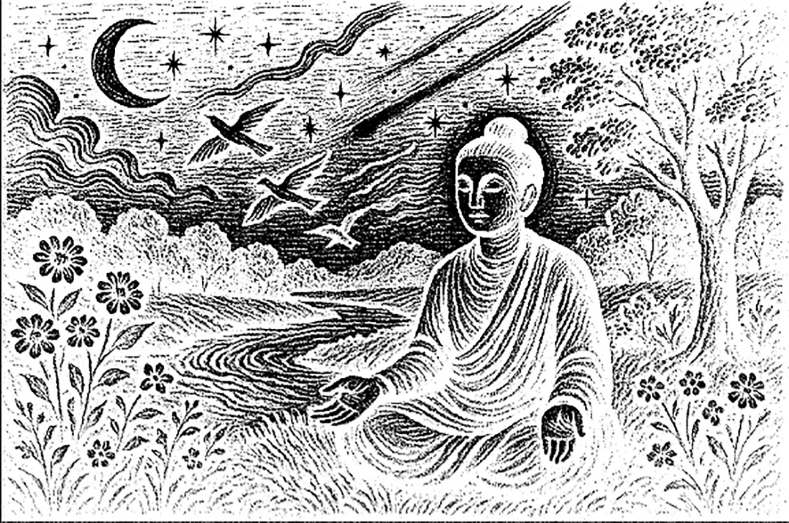
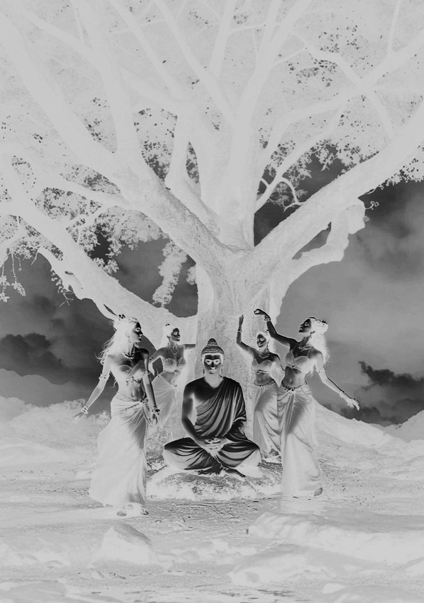
一切佛与成佛之法门都从本经中出。佛法与非佛法都从分别心中产生，本经的核心内容就是分别心。因此受持《金刚经》的福德巨大，远远超过财布施。
佛问：“须菩提，你怎么认为？证得须陀洹果位的人会升起‘我得须陀洹果’这样的念头吗？
须菩提回答：“不，世尊，因为须陀洹也叫‘入流’，但实际上没有什么可入之处，不执着于色、声、香、味、触、法六根境界，这种境界取名叫‘须陀洹’。”
佛又问：“须菩提，你怎么认为？证得斯陀含果位的人会升起‘我得斯陀含果’这样的念头吗？”
须菩提回答：“不会，世尊。因为斯陀含果也叫‘一往来’，但实际上没有所谓的往来，只是取名叫‘斯陀含’。”
佛继续问：“证得阿那含果位的人会升起‘我得阿那含果’这样的念头吗？”
须菩提回答：“不会，世尊。阿那含也叫‘不来’，但是实际上没有什么‘不来’，只是取名叫‘阿那含’。”
佛又问：“证得阿罗汉果位的人会升起‘我得阿罗汉果’这样的想法吗？”
须菩提回答：“不，世尊。实际上没有什么法可以称之为‘阿罗汉’。如果阿罗汉升起‘我得阿罗汉果’这样的念头，那么他已经执着于四相。世尊，佛说我得无诤三昧，人中最为第一，是第一离欲阿罗汉。但是我不升起那样的念头。如果我心中升起‘我得阿罗汉道’这样的念头。世尊就不会说我是乐阿兰那行者。实际上我无所行，只是取名叫‘须菩提’，说我‘乐阿兰那行’。”
1．须陀洹、斯陀含、阿那含：须陀洹相当于四空定中的识无边处定的果位；斯陀含相当于四空定中的无所有处定的果位；阿那含相当于四空定中的非想非非想处定的果位。三个果位都是阿罗汉以下的果位，也就是还在轮回内。
2．入流：初入圣人之流之意。断三界之见惑，逆生死之流。得此果位者再经七番生死，必入涅槃。这里的“涅槃”不是成佛的意思，是成为阿罗汉，断生死、出轮回的意思。
“不入色、声、香、味、触、法”意思是已灭六根境界，不再执着于五欲六尘。在这里“法”是意识中的妄想，包括文字妄想、注意力、情绪等。因此不执着于法的人就不会升起“我得须陀洹果”这样的念头。
3．一往来：只需再投胎人间一次就可以修成阿罗汉出轮回。
4．不来：这一生死了就不再受生，成为阿罗汉。
5．无诤三昧：“无诤”就是不和他人争论、争辩、斗争的意思；进一步说，心中已经没有斗争之观念。“三昧”就是禅定。
6．第一离欲阿罗汉：“离欲”就是灭尽一切欲望的意思。一切欲望都是执着，所以“第一离欲阿罗汉”就是已经没有一切执着的阿罗汉。
7．乐阿兰那行者：“阿兰那”原意为树林，代指清静之地。“乐阿兰那行者”就是喜欢在清净之地独自修行的人。
1．若阿罗汉作是念，我得阿罗汉道，即为著我、人、众生、寿者。
佛也可以称之为众生，所有的意识都可以称为众生。这里的阿罗汉是已经没有执着、解脱生死的众生，但还有菩萨的妄想和阿罗汉的分别心。有了分别心就有我相、人相、众生相、寿者相，所以阿罗汉本来就有四相。但是阿罗汉没有执着，所以说，阿罗汉不著我相、人相、众生相、寿者相。大家要明确知道“有四相”和“著四相”之间的区别。
在“我得阿罗汉道”这句话里，“我”是我相，也就是分别心。“得阿罗汉道”是执着，是“见、取、执”中的“见”和“取”。再细分开来，“这是阿罗汉道”叫“见”，“我认为这是什么”这样的想法就是“见”；“得阿罗汉道”中的“得”是取——贪欲。
所以，阿罗汉要是升起“我得阿罗汉道”这样的念头就不是阿罗汉，因为这个想法里已经有了分别心和执着。
2．须菩提实无所行：须菩提没有什么修行的行为。“修行行为”和“非修行行为”也是在分别心中产生的两种对立的相。所以，如果须菩提有“认为自己修行”或者“认为自己不修行”的想法，他就不是阿罗汉。
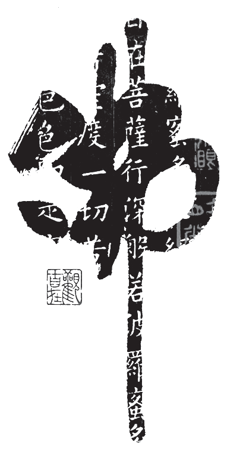
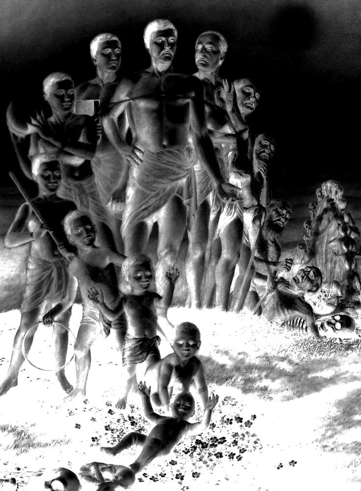
如果修行者认为自己在修行，或者升起“我是谁”“我得什么果位”等念头，那么他就有我见，也就不是阿罗汉。
佛问须菩提：“你怎么认为？如来过去在然灯佛处，学到什么法了吗？”
须菩提回答：“不，世尊，如来过去在然灯佛处，并没有学到什么法。”
佛问须菩提：“你怎么认为？菩萨庄严佛土不？”
须菩提回答：“不，世尊，‘庄严佛土’等于‘非庄严佛土’，只是取名‘庄严’”。
佛说：“所以，须菩提，诸大菩萨应该这样生清净心，不应执着于色、声、香、味、触、法生心，应该没有任何执着地生心。须菩提，譬如有人身体像须弥山王那么大，你怎么认为？他的身体很大吗？”
须菩提回答：“很大，世尊。为什么呢？佛说的大身并不是真实存在的身，只是取名叫‘大身’。”
1．在这里出现另一位佛，叫“然灯佛”。释迦牟尼佛自己说过，在见到然灯佛之前，已经在很多世界见到很多佛，并且在他们的佛法上种下善因、做了很多功德。
在遇到然灯佛的时候，释迦牟尼佛（前世）也是修行人，是有福报的人，但不是出家人。他看到然灯佛要进城，就去迎接。这个时候已经有很多人去迎接佛，还把城市打扫得非常干净，但是在然灯佛必经的路上还有一滩水。释迦牟尼佛（前世）就趴在地上，把自己长发散开，铺到这滩水上，让然灯佛踩着自己的头发过去。
然灯佛应该没有情绪，也不会感动，但是看到这样的情形，就给释迦牟尼佛（前世）授记说：过后九十亿劫，等你修满三阿僧祇劫时，你应当做佛，号释迦牟尼。
在这里我们要明确地知道，佛授记某人未来会成佛，是先确定这个人有大菩提心的前提下才会做。当我们发大菩提心，发愿度一切有缘众生的时候，我们的业才会开始减少，走上真正的解脱之路。还有，我们的修为要达到四禅以上。因为四禅以下有情绪的时候，我们发愿是用情绪带出来的欲望，并不坚固。我们的情绪和欲望是无常善变的，有可能今天发愿，明天又退转；也有可能遇到困境就退缩。所以只有修到四禅，灭尽情绪和欲望之后，所发的愿才是真正的愿，佛也只给这样的人授记。
在这里然灯佛给释迦牟尼佛（前世）授记，说明释迦牟尼佛（前世）已经修到了四禅以上，并有大菩提心。
2．庄严佛土：普度众生的行为称之为“庄严佛土”。
佛菩萨度人有三种方式：第一种方式叫禅那，是提供全面加持力的方式；第二种是提供点对点的帮助和引导的方式；第三种是带着业进入轮回，一边消业一边度人的方式。真正的传法需要一个团队，三种方式同时进行才能顺利度人。（详见《坐禅2》。）
庄严佛土者则非庄严，是名庄严。
如果仔细分析，“则”和“即”有不同的含义。第八章最后一句“所谓佛法者即非佛法”，意思是佛法不是佛法。“庄严佛土者则非庄严”，意思是“庄严佛土”等于“非庄严”。“庄严”与“非庄严”都是分别心中产生的相，在没有分别心的境界里本不存在。因此可以说，“庄严不是庄严”，也可以说，“庄严等于非庄严”，我们只是给它取名叫“庄严”与“非庄严”。如果菩萨认为自己在庄严佛土，认为自己在度人，有这样的想法就不是菩萨。
3．是故，须菩提，诸菩萨摩诃萨应如是生清净心，不应住色生心，不应住声、香、味、触、法生心，应无所住而生其心。
“菩萨摩诃萨”是大菩萨，有大菩提心的人，甚至有更高的平等普化心和同体大悲心的人。
“清净心”，在第二章和第三章中佛讲到，发阿耨多罗三藐三菩提心之后如何维持，如何降服其他妄想。所以我们可以把“清净心”理解为大菩提心。
菩萨度人的大愿是在没有一切相的境界里所发。菩萨的意识里有“这里有众生，我要度他”这样的念头，那么他已经执着于人、我、众生、寿者，已经不是菩萨。真正的菩萨是在无相的境界里，纯粹以愿力去度众生，而且也不会有“自己在度人”这样的想法。
“不应住色生心”，“住”是执着，“色”是物质世界的统称，我们的肉身、外部的器世界、虚空，统称为“色”。
此段大义如下：大菩萨们应该这样发大菩提心——不应执着于色而生心，不应执着于六根境界而生心，应该不执着于一切而生其心。
4．“须菩提，譬如有人身如须弥山王，于意云何？是身为大不？”
须菩提言：“甚大，世尊。何以故？佛说非身是名大身。”
“须弥山”从忉利天的中心开始，一直往下，到四天王天、我们所在的宇宙，再到下边地狱世界为止，就像一根钉子一样，串连着四个世界。这四个世界的众生都依地而居。
在忉利天的须弥山山顶上，有忉利天宫，住着帝释天。下边的四天王天又分成四个部分，由四位天王分别管理。每个天王又有几个儿子，天王们把自己统治的地区分给自己的几个儿子来管。再往下到我们这个世界，同样分成四个部分，归属上边的四个天王来管。
“身如须弥山王”，比喻身体非常巨大。
“佛说非身是名大身”，在这里省略了“大身”一词，应该是“大身，佛说非身，是名大身。”“身”与“非身”都是分别心中产生的相，在没有分别心的境界里本不存在。因此可以说，“大身不是身”，也可以说，“大身等于非身”，我们只是给它取名叫“大身”与“非身”。
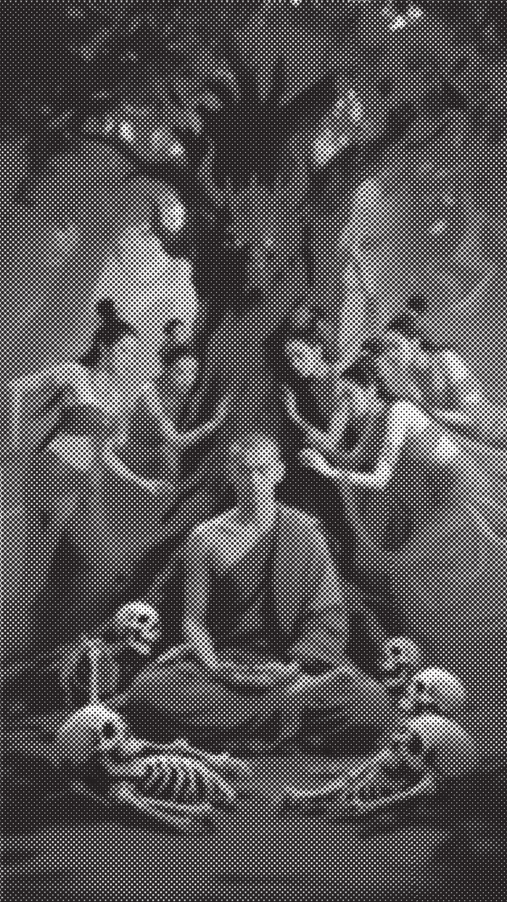
“法”与“非法”，“有所得”与“无所得”，“庄严”与“非庄严”，“身”与“非身”都是从分别心中产生的相，在没有分别心的境界里本不存在。大菩萨们应在无相的境界里发大菩提心，不能执着于六根境界。
佛问须菩提：“如果恒河中的每一粒沙变成一条恒河，这么多恒河中的沙，也就是恒河沙数的平方，它的数量多不多？”
须菩提回答：“光是恒河的数量就已经无数了，其中的所有沙数，应该非常多吧。”
佛说：“须菩提，那我今天如实地告诉你，如果有善男子、善女人，用七宝装满恒河沙数的平方般多的三千大千世界，再用以布施，那么他得到的福德多不？”
须菩提说：“非常多，世尊。”
佛告诉须菩提：“如果有善男子、善女人，自己受持《金刚经》，乃至四句偈，或者为他人解说《金刚经》，所获得的福德比用装满恒河沙数平方的三千大千世界的七宝用来布施的福德还要多。”
1．恒河：印度的大河，意为“从天堂来”。起源于喜马拉雅山南坡，一直流经印度北部，到现在的孟加拉国进入孟加拉湾入海，全长2700 公里，流域面积106 万平方公里，两岸约1500 公里长的土地，在恒河的灌溉下物产丰富，被印度教视做圣河。在佛经里，佛陀经常用恒河沙来比喻某些事物的数量非常多，以至于无法衡量。但它是可数的，只是数量太多，难以计算而已。
福德与功德不一样。在佛法上种的善因、做的善行获得的叫“功德”；与佛法不相关的善行获得的叫“福德”。这里用财布施所得的福德和佛法上的功德相比较。
佛说的意思是，自己修行和传法的功德，远大于财布施的福德。为什么呢？因为传法是教人解脱的智慧，引导人离开痛苦的轮回、最终成佛，是究竟之法。相比而言，与佛法不相关的善行，虽然可以帮助到人，也让人升起欢喜心，但无法让人解脱生死，有时候我们的善行还会让他人更沉溺于轮回中。因此，这类善行并不是究竟之法。
历史上有名的庞蕴居士，把大量的钱财沉入海底也不愿布施于人。因为他自己是商职业菩萨转世的再来人，从菩萨的立场看，用这么多钱财布施他人，会让人陷入更大的执着当中，从而沉迷世间，会离解脱越来越远。
对于我们凡夫而言，布施和行善很有必要，而且是必须的。因为我们凡夫在累世的轮回当中，已经造了太多的恶业，那些结恶缘的众生一直想找机会复仇，所以需要用大量的福德来稀释恶缘众生对我们的恶念。善行有善报，恶行有恶报，善报和恶报不能直接抵消，但是在恶报来临的时候，用我们的善报可以稍微对冲一下，能给我们争取一些时间，还能缓解恶报的程度。
因此对凡夫而言，行善布施非常重要。只不过在义理上说，财布施的福德远远不如法布施的功德大，所以佛说法布施为第一。
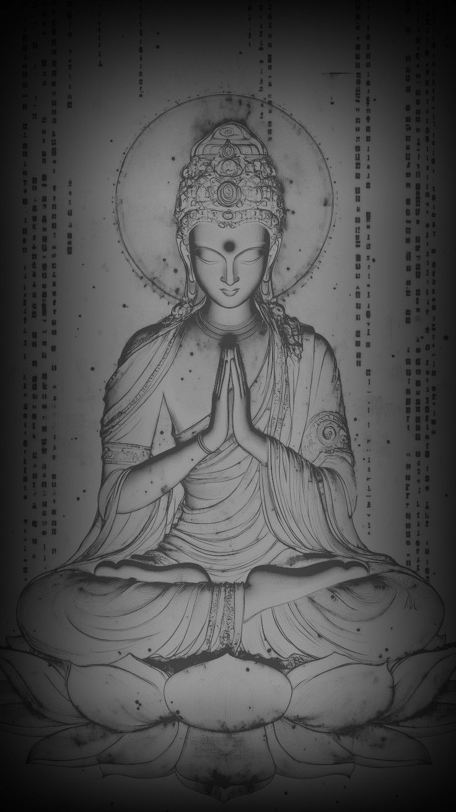
受持《金刚经》乃至四句偈，和给他人解说《金刚经》所获得的功德，也就是自己修行和法布施的功德，比财布施的福德要大得多。
佛告诉须菩提：“如果有人讲经，哪怕是讲四句偈等，你要知道他讲经的地方是一切世间天、人、阿修罗应当供养的地方，就像供养佛塔庙一样。而这个受持读诵《金刚经》，还为他人解说的人，未来必定成为菩萨。《金刚经》所在的地方，就相当于有佛，或者佛的亲传弟子常住一样。”
1．阿修罗：我们可以理解为天界的畜生，好胜心强，喜欢斗争，虽然有天人的福德，却没有天人的智慧。
在这里佛只讲天、人、阿修罗上三道众生。因为只有上三道的众生有理解佛法的智慧，也有亲闻佛法的机会；下三道的众生没有这个智慧，也就没有亲闻佛法的机会。
畜生道和人间处在一个空间，佛在世的时候畜生也可以来听法，但是佛经里从来没有出现过畜生道的弟子。有智慧的畜生可以听闻佛法，甚至可以修行，但是佛从来没有收过畜生道的弟子。只有先成为上三道的众生，才有可能成为佛陀的弟子。
大部分鬼道众生因为智慧不足，无法自己学习佛法，只有少部分鬼王级别的鬼才能学习佛法。鬼道也有学习佛法的学校，但必须要有人间的亲人做功德回向，才能让鬼道中的人去那里学习；只不过无法学到高端的佛理，只能学到一定程度的基础知识后投胎人间。
地狱道的众生完全没有智慧学习佛法。地藏菩萨虽然在地狱度人，但只是给地狱众生结佛缘的机会，而不能直接传授地狱众生高端佛法。
2．供养：佛在世的时候，初期教团里有“四事供养”的说法，是衣服、饮食、卧具、汤药这四种物品。
先说衣服，比丘的衣服叫“袈裟”。佛说出家比丘只留一钵三衣，而接受的供养往往是布片。因为衣不遮体的穷人也很多，供养完整袈裟的人少，所以袈裟都是用很多布片缝合而成，因此也叫“百纳衣”。现在，和尚穿的袈裟上有砖墙一样的条纹，就是象征当时的传统。
再说食物。佛陀在世的时候，僧团没有厨房和厨师，比丘们就靠化缘来获得食物，因此在饮食方面要求并不高，施主供养什么就吃什么。佛陀传法前期也提出了三净肉的概念，允许比丘们吃三净肉；到了后期传大乘理论的时候才开始禁止吃肉。
还有卧具，顶多算是现在的草席之类，因为佛定下戒律——不能睡高广大床。
最后是汤药，用来治病的。这四种叫“四事供养”。
那个时代，僧团里的比丘们都持金钱戒——不接受金钱供养，更不蓄财，只接受如上四种布施物品。等佛法传到后世，又出现了“五种供养”“六种供养”“十种供养”等说法。
3．塔：叫“浮屠”，起源于佛教。原来是指专门安放佛舍利的建筑物，后来又出现了不安放佛舍利、只有纪念意义的佛塔，比如佛陀降世、成道、曾经讲过法的地方，或者涅槃的地方等，在这些地方修建塔，用以纪念。所以有佛舍利的建筑称为“塔”，无佛舍利的建筑称为“支提”，用以区别。
佛塔传到中国之后，就算没有佛舍利安放，也可以建塔进行供养，特别是藏经阁。早期的寺院里，很多藏经阁采用佛塔的建筑风格。
后世有大德、大修行者去世之后，也可以把他的舍利或者遗物安放于一座佛塔进行供养。所以有些大寺院后面还有专门的塔林，供养着往昔有名的大修行者。
4．第一希有之法：在这里指成为菩萨。

受持《金刚经》，或为他人解说《金刚经》的功德巨大，未来必定成为菩萨。经典所在之处，就像佛或佛的亲传弟子常住一样，当受人、天、阿修罗之供养。
须菩提问佛：“这部经应该叫什么名字？我们应该怎样奉持？”
佛回答须菩提：“就叫《金刚般若波罗密》，以此名奉持。为什么呢？须菩提，佛说的般若波罗密，不是般若波罗密，只是取名叫‘般若波罗密’。须菩提，你怎么认为？如来说过什么法吗？”
须菩提回答：“如来没有说什么法。”
佛问：“须菩提，你怎么认为？三千大千世界里的所有微尘，它的数量多不多？”
须菩提回答：“非常多，世尊”。
佛说：“须菩提，所有的微尘，如来说它不是微尘，只是取名叫‘微尘’。如来说世界不是世界，只是取名叫‘世界’。须菩提，你怎么认为？可以三十二相求见如来吗？”
须菩提回答：“不能，世尊。不能以三十二相得见如来，为什么呢？如来说三十二相不是三十二相，只是取名‘三十二相’。”
佛说：“须菩提，如果有善男子、善女人，布施恒河沙数那么多的身体和生命。又有人信受奉持这部经，乃至四句偈等，为他人解说，所获得福报、功德比前者更多。”
1．须菩提，佛说般若波罗密，即非般若波罗密，是名般若波罗密。
须菩提，佛说的般若波罗密，不是般若波罗密，只是取名叫般若波罗密——这样的语句在《金刚经》里反复出现。初学看到这种语句很容易迷惑，般若波罗密到底是不是般若波罗密。我们要知道，佛这里讲的并不是客观存在的事物，而是在意识层面上的认知。菩萨的意识里没有分别心，也就没有“般若波罗密相”和“非般若波罗密相”。“般若波罗密”本不存在，我们只是给它取名叫“般若波罗密”。因为佛要传法，就要用语言，有语言就有名相，佛只是给他取个名而已。
后面的内容当中，“佛说什么，即非什么，是名什么”这样的语句多次出现，都是指在意识层面上的认知。
2．须菩提，于意云何？如来有所说法不？
须菩提白佛言：“世尊，如来无所说。”
佛问须菩提：“你怎么认为？如来说过什么法吗？”
须菩提回答：“如来没有说什么法。”
须菩提虽然是阿罗汉，但是已经领悟到了没有分别心的无相境界。所以他回答说，如来并没有说什么法。
3．微尘：在《华严经》和《俱舍论》中对“微尘”有讲解。
佛讲最小的粒子叫“极微之微”，也叫“邻虚尘”，与虚空做邻居之意。七个极微之微合成“色聚之微”，“色”就是物质，是物质形成的开始。七个色聚之微合成“微尘”。七个微尘合成“金尘”，金尘可以在金属里自由移动，可以理解为电子。七个金尘合成“水尘”，水尘可以在水中自由移动。七个水尘合成“兔毛尘”。往下还有“羊毛尘”，“牛毛尘”，“隙尘”。
佛还讲到，阿罗汉的天眼能看到“微尘”，菩萨的天眼能看到“色聚之微”，佛的天眼能看到“极微之微”。
以上理论想用现代物理学来解释，会有些牵强的地方，但有一点我们不能否定：在两千五百年前，没有显微镜的情况下，佛提出了这个世界由微尘和合而成的理论，还说到微尘再分解下去就是虚无，也就是说世界是无中生有的。
4．诸微尘，如来说非微尘，是名微尘。
“微尘”和“非微尘”都是从分别心里产生的相，在没有分别心的境界里，微尘相和非微尘相本不存在。因此可以说，“微尘不是微尘”，也可以说，“微尘等于非微尘”，我们只是给它取名为“微尘”。
5．世界非世界，是名世界。
与上同理。“世界”和“非世界”都是从分别心里产生的相，在没有分别心的境界里，世界相和非世界相本不存在。因此可以说，“世界不是世界”，也可以说，“世界等于非世界”，我们只是给它取名为“世界”。
6．不可以三十二相得见如来
三十二相：在《大智度论》里讲到，佛有三十二种殊胜的相貌，第一个叫“足下安平立相”，到最后一个“眉间白毫相”，在这里不赘述。佛经里讲到，三十二相是佛和转轮圣王所拥有的特殊外貌。转轮圣王是等觉菩萨，从凡夫的视角看，等觉菩萨与佛并无差别，等觉菩萨也可以创造世界来度人。只要佛现出众生看得见的相，他就已经动了妄想，所以佛是以等觉菩萨的状态进行传法活动的。
在这里，“如来”指真正的佛法。佛说的意思是，执着于看得见的外相，就不能证悟佛法。
7．三十二相即是非相，是名三十二相。
与上同理。“相”与“非相”都是从分别心中产生的相，在没有分别心的境界里，“相”与“非相”本不存在。因此可以说，“三十二相不是三十二相”，也可以说，“三十二相等于非三十二相”，我们只是给它取名为“相”与“非相”。
8．须菩提，若有善男子、善女人，以恒河沙等身命布施，若复有人，于此经中乃至受持四句偈等，为他人说，其福甚多。
佛告诉须菩提：受持四句偈或者为他人说《金刚经》的功德，远大于用恒河沙等生命布施的福德。
这又是一个比较，前面是用七宝进行财布施，这里是用身命布施，比七宝贵重得多，福德也大很多。但是法布施的功德更巨大。
佛法里有身布施的说法，后世讲法者，包括我个人对这种身布施的说法不置可否——既不提倡，也不反对。要不要身布施，这都是个人的选择问题。
在佛经里，有佛陀割肉喂鹰、舍身饲虎的故事，这都叫肉身布施，属于福德的布施。这种故事听一听便可，不提倡模仿。但是也有属于功德的布施，比如，为了求法进行的肉身布施。
佛经里讲，佛陀在某个前世修行的时候遇到一个人，这个人其实是魔，他向佛陀讲了半段偈语，佛陀想知道后半段，结果这个人说：“后半段可以告诉你，但是说完我就得吃了你。”佛陀毫不犹豫地答应，这个人也的确讲了后半段偈语，说完就把佛陀吃掉了。这就是为了求法做的身命布施。在这个故事里，不只讲的是布施，还有求法的诚意、为了求法可以舍弃一切的态度。
还有非常重要的一点，很多人看不到这一点，佛陀并没有问对方是什么人！他没有问：你是谁？你是出家人，还是在家人？是菩萨，还是罗汉？佛陀只是一听到上半段偈语很有深意，就敢舍自己的生命求下半段，但是没有问对方是谁。真正的求法者都是如此！
佛说修行如救燃头急，如果我们头上真的着火了，眼前有一桶水可以救火，我们还会关心这个水干不干净、来自哪里吗？真正的修行人，对佛法有迫切需求的人，不会关心讲法者的身份和来历，他只关心法的真实性。
在这个故事里，佛陀把自己的生命舍弃了，算不算佛陀吃亏呢？当下看的确是吃亏的。但是我们已经知道“诸佛同体”的原理，就知道佛菩萨的意识遍虚空的真相；我们的一切行为、一切言语、心里的每一个想法，佛菩萨都知道。所以当有人为了求法舍弃生命时，佛菩萨自然会为其安排来世的修行，也会派真正的菩萨、罗汉来指导。
从这个角度来讲，求法最重要的是发心——求道心、大慈悲心、大菩提心、平等普化心、同体大悲心；只要有这样的发心，佛菩萨肯定会有安排。
佛给本经取名叫《金刚般若波罗蜜》。

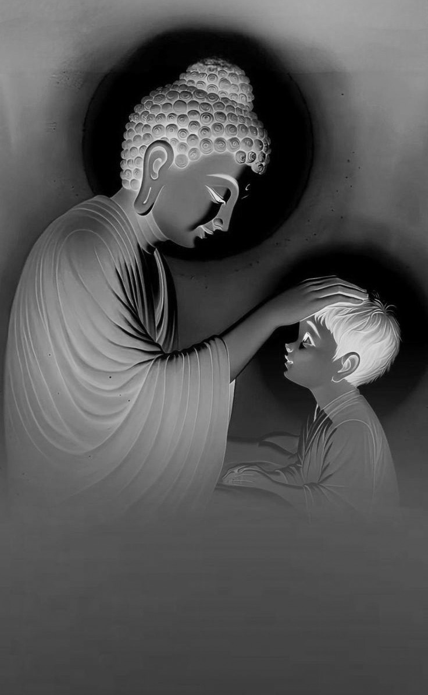
在没有分别心的境界里，没有一切相，“般若波罗密”与“非般若波罗密”都是分别心中产生的相，它们本不存在，只是为了方便传法，取名叫“般若波罗密”。于此同理，如来并没有说什么法，也不能用看得见的“三十二相”求见如来。受持《金刚经》，为他人解说《金刚经》的功德比布施身命的福德还要大。
这时，须菩提听闻佛所讲的经，深刻领会了其中的义理，感激涕零，对佛说：“稀有难得啊，世尊。佛说这样深奥的经典，从我修得慧眼以来，从来没有听过这样的经。世尊，如果有人听到这部经，能生起清净的信心，就能悟到实相（宇宙真相），我们就能知道这个人，会成就第一稀有之功德。世尊，实相即是非相，如来说只是取名‘实相’。世尊，我今天听到这部经，信解受持不难，但到了未来佛灭度后五百年，还有众生听到这部经，能信解受持，那么这个人是第一稀有的。为什么呢？因为这个人无我相、人相、众生相、寿者相。为什么呢？我相即是非相，人相、众生相、寿者相即是非相。为什么呢？没有一切相，就叫诸佛。”
佛告诉须菩提：“就是这样，就是这样。如果有人听到这部经，不吃惊、不恐怖、不畏惧，就知道这个人非常稀有。为什么呢？如来说的第一波罗蜜不是第一波罗蜜，只是取名叫‘第一波罗蜜’。须菩提，忍辱波罗蜜，如来说不是忍辱波罗蜜，只是取名叫‘忍辱波罗蜜’。为什么呢？须菩提，比如过去世，我被歌利王割截身体，我当时没有我相、人相、众生相、寿者相。为什么呢？我被肢解时，如果有我相、人相、众生相、寿者相，就应该生起嗔恨心。须菩提，又比如我过去五百世做忍辱仙人，那时我就没有我相、人相、众生相、寿者相。因此，须菩提，菩萨应该在没有一切相的情况下，发阿耨多罗三藐三菩提心，不应执着于色而生心，不应执着声、香、味、触、法而生心，应生没有执着的心。如果心中有执着，便是非执着。所以佛说：‘菩萨心中不应执着于色而布施。’须菩提，菩萨为利益一切众生，应该如此布施。如来说一切诸相都不是相，一切众生都不是众生。须菩提，如来是真语者、实语者、如语者、不诳语者、不异语者。须菩提，如来所证得的法无实无虚。须菩提，如果菩萨心中执着于法而行布施，就像人进入暗室，什么都看不见。如果菩萨心中不执着于法而行布施，就像人有眼睛，又有日光明照，可以看到种种色。须菩提，未来之世，如果有善男子、善女人，能受持读诵这部经，那么如来用佛智慧，能知道这个人，也能见到这个人，未来必定成就无量无边的功德。”
1．尔时，须菩提闻说是经
“经”是佛讲完法后，后人集结成文字体时才提出来的字。“经”字已经包含了后人的高度评价和认同。佛上座布道的行为叫“讲法”或者“说法”，有时候会围绕一个主题讲，有时候会回答弟子们提出的问题，佛自己不会上座就说我今天要讲什么经。
大家读佛经，首先要明白一点，佛经并不是佛说的第一手记录，现在流通的佛经都是经过后世编撰过的版本。本段的“闻说是经”也是后世编撰时写进去的词句。
我们可以这样看，佛讲法时在场闻法的弟子们把自己听到的内容集结成的“经”，算是记述体第一版本。佛也没有把真相全部讲出来，有些部分他故意不讲，留给后人讲，或者等佛去世之后，以伏藏的形式传出一部分。“佛是真语者、实语者”这一点没有错，他只是保留一部分内容不讲而已。
记述体第一版本的佛经在印度传承一千年，在这过程中必然会有增加和变动的部分，这些就忽略不计。一千年后玄奘取经回到中国进行翻译，还有鸠摩罗什等其他人也有翻译。经过翻译用汉语写出来的佛经可以看作记述体第二版本，因为翻译成不同文化圈的不同语言，在翻译过程中也会有所失真。
到如今，我们还在用一千五百年前的佛经学习。因为我们的语言习惯已经有了很大的变化，要直接读懂佛经，还是有些难度，所以还得靠现在的修行人和讲经说法的人，用现代语言再讲一遍，这样就变成了记述体第三版本。
从真相到记述体第一版本、第二版本、第三版本，经过两千五百年的传播和翻译，就算不去故意改动，必然存在失真的部分，或者理解上有偏差的部分。
假如现在有一个真正悟道的人，或者是再来人，把他悟到的世界真相直接讲出来，或者写出来。这个内容应该和真相最接近，甚至超过记述体第一版本，因为第一版本的佛经也是弟子们所编撰，并不是佛自己所写。从这个人的角度再去看佛经，重新解释一下，应该可以最大限度地还原佛的真意。
有智慧的人应该知道，从逻辑上讲，世界的真相一直客观存在，佛是发现真相和传播真相的人，并不是创造真相的人。佛说他和他的传法行为都是“指月之手”，我们要通过这个“手”看到真相。“众生平等”是佛法的核心理论，所有众生本来都是佛。目前成佛的众生也很多，既然有无数的佛菩萨存在，那么知道真相的人也绝不止一个。佛法能流传至今，都是靠菩萨、罗汉们投胎入世，辛苦传承的结果。单靠这个世界的凡夫，佛法传不了两百年就会消失。
现在有些愚痴的人说，不用看现代人讲经说法的内容，看古人的就行。看什么书是个人自由，我们不干预，也不做评论。还有些愚痴的人，一直用佛亲说与否作为判断佛经真伪的唯一依据。不管是何人所讲，只要讲的是真相，又有何妨。
一切都有可能性，认为现代人没有修为，认为只有佛亲说的才是真理，认为自称再来人的都是魔，这些都是愚痴凡夫的我见而已。《金刚经》里说，我见、人见、众生见、寿者见都是不可取的，深著我见才是无法解脱的真正原因。
有智慧的人应带着开放性的思维看待问题，看到一些不一样的理论，不急着否定，从中吸取对自己有利的部分才是正解。
2．深解义趣，涕泪悲泣而白佛言
义趣：义理之所归趣，就是中心思想、核心内容。
深解：深刻理解。
涕泪悲泣：感动地哭泣。
须菩提是阿罗汉，没有情绪，所以“涕泪悲泣”是一种夸张的说法，或者须菩提是演给大家看的。大部分佛经都是如此。那些提问的菩萨或者阿罗汉都知道答案，但还是要问佛，让佛讲出来，以便于其他人学习，还要记录下来传给后世，就是唱双簧。
3．希有，世尊。佛说如是甚深经典，我从昔来所得慧眼，未曾得闻如是之经。
希有：就是稀有、难得之意。
慧眼：能读懂他人心思的神通叫“慧眼”，也叫“他心通”。阿罗汉的智慧叫“平等性智”，可以看到有缘众生的分别与执着。
因为阿罗汉还有分别心，所以从阿罗汉的视角看一个众生，是执着和分别的汇聚体；但是很难反映出全部有缘众生对他的分别、执着，只能反映与当下时间接近的一部分，所以阿罗汉只能看到前五百世和后五百世。
如果以菩萨的视角看众生，在菩萨的无相境界里，可以看到一切有缘众生的妄想混合在一起。菩萨如果选择一个众生来看，那么在他的意识里会同时反映出所有其他众生对他的执着和分别心，这就叫“业”。所以菩萨能看到一个众生的业的总量。
4．世尊，若复有人得闻是经，信心清净，即生实相，当知是人成就第一希有功德。
“信心清净”中的“信”：是走上解脱觉悟的第一步，也是最难的一步。从传法者的立场看，只要赢得求法者的信任，度人的事就算成功了一半。最初四圣佛开始度人的时候，以为只要告诉人们宇宙的真相，再传授用以解脱的禅定方法，就可以把人度了。可实际操作之后发现收效甚微，因为人们根本就不相信。为了让人产生“信”，就有一拨人专门去研究这个“信”，所以就有了禅职业之后的第二个职业——教职业。（关于教职业的内容请看《坐禅2》中的“职业”部分。）
清净：与妄想烦恼相对应，没有妄想烦恼的状态叫“清净”，那么“信心清净”就是没有妄想烦恼的、毫无怀疑的、纯粹的信。想要让人相信佛法，不光需要前期的铺垫，还需要当事人的福德、智慧；两个条件都具备之外，还要讲法人的能力。
所以度人只能因缘而度，不能强迫，也不能强行灌输。一些家长们问，给小孩子讲法合不合适；我个人反对给小孩讲高深佛理，有可能会产生反作用。最好是循循善诱，让人自发地学习，这才是稳妥的度人方法。
实相：四禅之后的智慧叫“妙观察智”，能看到实相的智慧，可以观察到真实的世界。这里的“实相”是阿罗汉的“平等性智”下观察到的世界，可以看到有缘众生的执着心，也是宇宙真相。
第一希有：在这里也是一种比喻，是夸张的说法，功德很难说是“第一希有”或是“第二希有”。如果以菩萨的境界闻是经，应该有更大的功德。
如果有人听到这部经，产生纯净的信心，就会看到宇宙的真相，我们就能知道这个人还成就了很大的功德。
5．世尊，是实相者，即是非相，是故如来说名实相。
与前同理。“实相”与“非相”都是分别心中产生的相，在没有分别心的境界里本不存在。因此可以说，“实相不是相”，也可以说，“实相等于非相”，我们只是给它取名叫“实相”“非相”。
6．世尊，我今得闻如是经典，信解受持不足为难。若当来世后五百岁，其有众生得闻是经，信解受持，是人即为第一希有。
信解：相信并且理解。相信和理解是两回事。我们周围有很多信佛的人，他们真信，但是让他们讲解高深的佛理，很多人说不出来；就是因为这些人只有信，却没有理解。在没有理解的情况下信，很容易产生迷信，“迷”就是“不解”，这种人最容易被人误导和带偏。
受持：就是把一部经或者咒作为一种修行方法，经常拿出来读诵。
对于须菩提来说，相信和理解《金刚经》，并受持《金刚经》并不难。但是等过了五百年，众生的根器跌落一个境界后，能闻到《金刚经》，并且信解受持的人非常稀有。
7．何以故？此人无我相、无人相、无众生相、无寿者相。
如果这个人没有“四相”，那么他应该是菩萨境界。所以这里讲的是解悟，虽然现在是凡夫或者阿罗汉，但是听到《金刚经》之后信解受持，接受“无四相”的理论，那么未来必定成为菩萨。
8．所以者何？我相即是非相，人相、众生相、寿者相即是非相。何以故？离一切诸相即名诸佛。
与上同理。“四相”与“非四相”都是分别心中产生的相，在没有分别心的境界里本不存在。因此可以说，“四相不是四相”，也可以说，“四相等于非四相”，我们只是给它取名叫“四相”“非四相”。
离一切诸相即名诸佛：佛与菩萨都无相，在这里只提“诸佛”，是一种方便说法。
9．佛告须菩提：“如是，如是。若复有人得闻是经，不惊不怖不畏，当知是人甚为希有。”
不惊不怖不畏：一般业障深重、智慧尚浅的人听到高深的佛理，会产生各种不好的情绪。
佛告诉须菩提：如果有人听到《金刚经》，没有产生各种不好的情绪，说明这个人是很稀有的人；因为只有业障少、慧根深的人，才能信受《金刚经》里的理论。
10．何以故？须菩提，如来说第一波罗密，即非第一波罗密，是名第一波罗密。
第一波罗密：是六波罗密中的“般若波罗密”。“般若”是智慧，“波罗密”是到彼岸的意思，合起来就是“到彼岸的智慧”。
与上同理。“第一波罗蜜”与“非第一波罗蜜”都是分别心中产生的相，在没有分别心的境界里本不存在。因此可以说，“第一波罗蜜不是第一波罗蜜”，也可以说，“第一波罗蜜等于非第一波罗蜜”，我们只是给它取名叫“第一波罗密”与“非第一波罗蜜”。
11．须菩提，忍辱波罗密，如来说非忍辱波罗密，是名忍辱波罗密。
“忍辱”是菩萨的六度法——布施、持戒、忍辱、精进、禅定、智慧当中的第三个。与业的部分相关，当恶报来临之时，坦然接受，不再报复，让恶业的轮转结束。
忍辱分三个境界，第一个境界叫“生忍”，第二个境界叫“法忍”，第三个境界叫“无生法忍”。
生忍：凡夫的忍，有执着和分别心的忍。三禅以下有情绪的凡夫受到伤害时，肯定会先升起不好的情绪，这个时候用理性来克制自己，也就是说，会升起要忍的欲望。这也是一种执着，是有为法。用我们的理性思维来选择忍，再用忍的欲望去强忍外界给我们的伤害，这叫“生忍”。
法忍：在佛的境界里，妄想、分别、执着统称为“法”。在只有妄想、分别，没有执着的阿罗汉的境界里，法指分别与执着。从阿罗汉的视角看，别人对自己的善行和恶行，都是有缘众生对自己的执着而已；虽然阿罗汉的意识里还留有对善与恶的认知，但是不再产生任何执着，也不试图去分别认知，这种忍叫“法忍”。
无生法忍：菩萨的忍。菩萨没有执着心，也没有分别心，从菩萨的视角看善行与恶行，都只是妄想而已。菩萨没有我相、人相、众生相，寿者相，所以也就没有“受伤害的我”和“伤害我的他人”，以及“伤害”这种行为。
所以在菩萨的境界里没有生忍，也没有法忍。“无生忍”和“无法忍”加在一起叫“无生法忍”。《华严经》中说道，“无生法忍”是八地菩萨的境界。
12．如来说非忍辱波罗密，是名忍辱波罗密。
与上同理。“忍辱波罗蜜”与“非忍辱波罗蜜”都是分别心中产生的相，在没有分别心的境界里本不存在。因此可以说，“忍辱波罗蜜不是忍辱波罗蜜”，也可以说，“忍辱菠萝蜜等于非忍辱波罗蜜”，我们只是给它取名叫“忍辱波罗密”。
13．何以故？须菩提，如我昔为歌利王割截身体
这是一个典故：佛陀于过去世在山上修行的时候，有一个国王带着几个妃子到山上游玩。国王打猎的时候，妃子们自由行动，见到了正在修行的释迦牟尼佛（前世），就和他聊了起来。歌利王回来之后找妃子们，看到她们围着一个陌生男人聊天，就很生气，便来问释迦牟尼佛（前世）：“你是谁？”释迦牟尼佛说自己是一个修忍辱行的修行者。歌利王说：“你既然修忍辱，我得试试你。”就拿刀开始伤害释迦牟尼佛（前世），先割耳朵，再割鼻子，又剁手、剁脚，一边割一边问释迦牟尼佛（前世）生不生气。佛一直回答不生气。最后歌利王割得差不多了，看佛没有反应，就说世上没有这样都不生气的人，怎么证明你不生气？这个时候释迦牟尼佛说：“如果我生气，我受伤害的这些部位不会再生；如果我不生气，受到伤害的部位都会再生。”话音刚落，全身受伤害的部位全部恢复。歌利王大惊，以为见到妖怪，还想继续伤害。此时护法善神大怒，下冰雹、大雨打歌利王。佛又说：“请护法善神不要恼怒，我原谅他，我将来成佛，最先度他。”
佛在人间传法的这一世，在鹿野苑对五比丘初转四谛法轮，五比丘中的憍陈如比丘就是曾经的歌利王。
14．我于尔时无我相、无人相、无众生相、无寿者相。何以故？
佛说：当时我被肢解身体的时候，是没有我相、人相、众生相、寿者相的。就是说，当时释迦牟尼佛的前世已经是菩萨境界了。
15．若有我相、人相、众生相、寿者相，应生嗔恨。
这句话也是方便说法，从有四相的阿罗汉到有情绪的三禅，中间还有四个无色界定和四禅，这每一层都有一个境界。所以哪怕是修到四禅或者无色界定的凡夫，对肉身的伤害并不在意。
修行到二禅或者三禅，要舍弃六根境界，也就是对肉身的执着，会回到阳神状态。在这过程中，会有一段时间经常梦到自己死亡的场景，梦中会体验难以想象的各种残忍死法。这和戒肉、戒淫时的梦中考核一样，也是必须要经历的过程。一开始肯定会有情绪，甚至对睡觉都产生恐惧；等修到一定程度之后，在定中或者梦中怎么死都不会产生情绪，包括恐惧，这个时候这种死亡的梦境就会消失。修行就会更进一步。
16．须菩提，又念过去于五百世作忍辱仙人，于尔所世无我相、无人相、无众生相、无寿者相。是故，须菩提，菩萨应离一切相，发阿耨多罗三藐三菩提心。
阿耨多罗三藐三菩提：是无上正等正觉。
发阿耨多罗三藐三菩提心：是要成佛的决心，也是普度众生的决心，即大菩提心。菩萨没有分别心，也就没有四相。
佛说自己过去五百世做忍辱仙人时就已经没有了四相。菩萨应当在无分别心的境界里发阿耨多罗三藐三菩提心。在无相的境界里发的愿是才真正的大愿。
17．不应住声、香、味、触、法生心，应生无所住心。
住：执着。
色、声、香、味、触、法：六尘，二禅以下出现的六根境界。
应生无所住心：菩萨应该灭尽一切执着。
菩萨不应执着于六根境界而发菩提心，应不执着于这些六根境界而发菩提心。
18．若心有住，即为非住。
“住”是执着。“有住”和“非住”都是从分别心中产生的相，在没有分别心的境界里本不存在。因此“有住”等于“非住”，我们只是给它取名叫“有住”与“非住”。“非执着”在这里并不是不执着，而是另一种执着，因为喜欢和讨厌都是执着。
19．是故，佛说菩萨心不应住色布施。
菩萨的布施主要是以法布施为主，也有财布施和无畏施，但是这里应该专指法布施。
佛说：菩萨做布施时不应执着于色。
20．须菩提，菩萨为利益一切众生故，应如是布施。
菩萨没有我相、人相、众生相，寿者相，也就没有自私自利的心态；菩萨以纯粹的大菩提心来做事，不求功德福报，只是做事而已。
“菩萨为利益一切众生故，应如是布施”，菩萨只为普度众生，做法布施时不执着于色、声、香、味、触、法等六根境界。
21．如来说一切诸相即是非相，又说一切众生即非众生。
与上同理。一切相都从分别心中产生，在没有分别心的境界里本不存在。因此可以说，“相不是相”，也可以说“相等于非相”，我们只是给它取名叫“相”与“非相”。“众生即非众生”也是同理。在这里我们要灭的是意识里的分别心，众生是客观存在的，不能被消灭，但是可以被度成佛。
22．须菩提，如来是真语者、实语者、如语者、不诳语者、不异语者。
真语者：讲真话的人。
实语者：讲实话的人。
如语者：“如”解释为真理，“如语者”就是传播真理的人。
诳语：谎言，“不诳语者”就是不说谎的人。
异语：所言前后不一致，没有统一的说法。“不异语者”就是所有演说一而贯之，前后一致的人。
23．须菩提，如来所得法，此法无实无虚。
与上同理。“实”与“虚”都是分别心中产生的相，在没有分别心的境界里本不存在。
佛说，如来证到的法无实无虚，是超越分别心的境界。
24．须菩提，若菩萨心住于法而行布施，如人入暗即无所见。
“住”是执着，“心住于法”就是执着于法。什么叫执着于法？菩萨讲法时认为“自己在讲法”，有这样的认知就是执着；认为这样的法是对的，那样的法是错的，有对错之分别，这叫“我见”，也是执着。
25．如人入暗即无所见
就像人进入了暗室一样，什么都看不见。这是比喻，也是事实，就像我们的眼睛，盯着看一处就看不到别处一样，自己有执着就不能感知到有缘众生的妄想。
26．若菩萨心不住法而行布施，如人有目，日光明照，见种种色。
菩萨虽然讲法，但不执着于法。在这样的认知下进行法布施，就像我们有眼睛，同时还有太阳一样的光源，会看到真实的世界，看到各种色相。
27．须菩提，当来之世，若有善男子、善女人，能于此经受持读诵，即为如来以佛智慧悉知是人，悉见是人，皆得成就无量无边功德。
如果未来之世，有善男子、善女人，能对此经的内容相信并且理解，又能读诵，如来用佛的智慧来看这个人，知道或者见到这个人一定能成就无量无边的功德。

《金刚经》非常稀有，能信解受持的人都会成就大功德。一切相都是分别心中产生的幻，菩萨应离一切相发大菩提心，菩萨做法布施时不应执着于法。佛还讲了与憍陈如比丘之间的前世因缘。
“须菩提，如果有善男子、善女人，上午布施恒河沙数那么多的身体，中午又布施恒河沙数那么多的身体，下午还布施恒河沙数那么多的身体，如此布施身体无量百千万亿劫。如果还有一人，听到《金刚经》，信心坚定不动摇，这个人获得的功德、福报比前者还大。更何况书写、受持、读诵、为他人解说。
须菩提，就说重点，这部经有不可思议、不可称量的无边功德。如来为大乘修行者说，为发最上乘发心者说。如果有人能受持、读诵这部经，还为他人广泛演说，如来就会知道这个人，也会见到这个人，必定会成就不可量、不可称、无有边、不可思议的功德。这样的人，能承担得起如来无上正等正觉的大业。为什么呢？须菩提，如果是喜欢小乘法的人，执着于我见、人见、众生见、寿者见，那就不能听受、读诵、为他人解说这部经。
须菩提，任何地方，只要有这部经，一切世间、天、人、阿修罗应当供养。应知此处就是佛塔，应该恭敬，作礼围绕，用各种华香装饰供养。”
1．须菩提，若有善男子、善女人，初日分以恒河沙等身布施，中日分复以恒河沙等身布施，后日分亦以恒河沙等身布施，如是无量百千万亿劫以身布施。
初日分、中日分、后日分：简单理解为上午、中午、晚上。
恒河沙：指数量很多，用这么多数量的身体来布施。每天分三次，布施三个恒河沙数的身体，持续无量百千万亿劫。这里讲的是福德。
劫：关于一劫的时长有不同的说法。在印度，通常以梵天的一日为一劫，即人间的四亿三千二百万年。还有一种说法是，人寿从十岁增长到八万四千岁，每一百年长一岁，再从八万四千岁减少到十岁，每一百年减一岁，这样增加和减少一个轮回需要的时间叫“一个小劫”，大概是一千六百多万年。二十个小劫是一个中劫，四个中劫是一个大劫。还有一种说法是，假设有一个巨大的石头，长、宽、高都是五百华里，每隔五百年，用天人的衣服轻轻扫一下，直到把大石头磨平，需要的总时长叫“一劫”。
在《坐禅2》中讲到，时间是分别心中产生的幻，不同的佛世界时间尺度不一样；在一个佛世界里，不同的小世界之间的时间尺度也不一样。所以我们看佛经里讲时间，只需理解它的意思便可，不需要精确计算。
2．若复有人闻此经典，信心不逆，其福胜彼，何况书写、受持、读诵、为人解说！
如果有人听到《金刚经》，对经中所讲的义理深信不疑，光是有这个信念，所获得的功德比前面恒河沙等身布施的福德还要大。如果书写、受持、读诵，为别人讲经说法，其功德大得不可思议。
为什么光是相信《金刚经》的义理，也有大功德？因为在诸佛同体的前提下，一个人对宇宙真相的正确认知和坚定信心也会影响到和自己有缘的所有众生。哪怕是在我们看得见的物质世界里，家庭中有一人信佛，那周围其他家人就算不信佛，也会受到影响，也算和佛法结了缘。
3．须菩提，以要言之，是经有不可思议、不可称量无边功德。如来为发大乘者说，为发最上乘者说。
发大乘者，发最上乘者：发菩提心的修行者。
佛说《金刚经》有“不可思议、不可称量无边功德”，是为发菩提心的修行者说的。
4．若有人能受持、读诵、广为人说，如来悉知是人，悉见是人，皆得成就不可量、不可称、无有边、不可思议功德。
受持、读诵，并为别人讲经说法的功德非常大。如来知道、也看到这些人会成就巨大的功德。
5．如是人等，即为荷担如来阿耨多罗三藐三菩提。
荷担：是担当或者承担的意思。
这样的人担得起，或者受得起如来的无上正等正觉。
6．何以故？须菩提，若乐小法者，著我见、人见、众生见、寿者见，则于此经不能听受、读诵、为人解说。
小法：解释为小乘佛法，是“人天乘福德法”和“声闻乘离苦法”，也可以包括“罗汉乘解脱法”。“乐小法者”指只求自己解脱，不求度人的修行者。
见：执着，是“我认为”的意思。执着心分三个境界，分别叫“见、取、执”，“见”是最深层的执着。
佛说，“乐小法者”因为执着于我见、人见、众生见、寿者见，所以不能听和接受《金刚经》，也没有办法读诵和为人讲经。
7．须菩提，在在处处，若有此经，一切世间天、人、阿修罗所应供养，当知此处即为是塔，皆应恭敬作礼围绕，以诸华香而散其处。
作礼围绕：佛经里经常会说“右绕三匝”，在印度右绕三匝是一种表示恭敬的礼节。那么左绕呢？有一种说法是，左绕是破坏的意思，所以左绕就是不恭敬的行为；也有一种说法是，右绕是上求佛道的意思，左绕是下化众生的意思，所以在家人右绕，出家人左绕。
这种当时的仪轨对我们现代人来说已经不那么重要了。在中国约定俗成的方式是右绕。
佛继续说：光是有《金刚经》的地方，一切世间天、人、阿修罗应该供养，《金刚经》所在之处就是塔，应该恭敬作礼围绕，还要用各种香花供养。

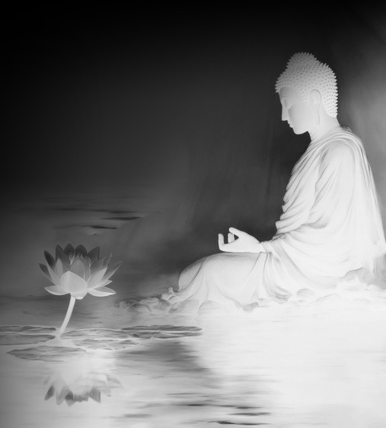
受持、读诵、为人解说《金刚经》的功德巨大，比身命布施的福德还要大。《金刚经》是给发大菩提心的大乘修行者说的，小乘人难以接受。《金刚经》所在的地方就像佛塔一样，应该恭敬供养。
还有，须菩提，如果有善男子、善女人，受持读诵《金刚经》，却被人轻视作贱，那是这个人前世所造的罪业应有堕入恶道的果报，但今世被人轻视作贱，前世的罪业就会消灭，未来必定成就无上正等正觉。
须菩提，我回忆过去无量阿僧祇劫，在遇到然灯佛前，已经遇到了八百四千万亿那由他诸佛，我都供养侍奉，没有空过者。如果到了末世，还有人受持读诵《金刚经》，他所得到的功德会非常巨大，我供养诸佛的功德与之相比，还不足他的百分之一，千万亿分之一，乃至算术、譬喻都不能表达。
须菩提，如果有善男子、善女人，在末世受持读诵《金刚经》，如果我具体说其所获得的功德，有些人听后会内心狂乱，狐疑不信。须菩提，应该知道《金刚经》的义理不可思议，受持读诵的善报也不可思议。
1．复次，须菩提，善男子、善女人受持读诵此经，若为人轻贱，是人先世罪业应堕恶道，以今世人轻贱故，先世罪业则为消灭，当得阿耨多罗三藐三菩提。
恶道：指下三途——地狱道、饿鬼道、畜生道。
当得阿耨多罗三藐三菩提：成就无上正等正觉，未来必定成佛的意思。
这里主要讲的是修行带来的一种利益，也就是重罪轻报、提前受报。不光是修持《金刚经》，所有正常的佛法修行都可以做到重罪轻报、提前受报。本来因前世的罪业应堕恶道的人，这一辈子就以“世人轻贱”的小报结束，不需要再堕入恶道受报。对于业，我们要知道，善有善报，恶有恶报，善报不能抵消恶报，但是可以减轻恶报的强度。
佛讲这一节是为后世修行人，也就是我们这些人考虑。到了后世，众生根器低劣，难有大乘修行者；就算有，也会被周围人不理解，甚至轻贱和攻击。佛告诉我们，被世人轻贱是前世恶行带来的果报，要对业有正确的理解，不要因周围人的轻贱和攻击而信心动摇；只要坚持修行，未来必定会成佛。
2．须菩提，我念过去无量阿僧祇劫，于然灯佛前，得值八百四千万亿那由他诸佛，悉皆供养承事无空过者。
阿僧祇：是数字，指无量数或者无穷极之数。
那由他：也是极大之数，相当于今天的百亿，也有说是千亿，就是非常大的数。
一个人要成佛，就要把所有的业全部消完，还要把和自己有缘的众生全部度成阿罗汉。因此需要去很多不同的世界度人，也就会见到很多不同世界的佛。现在还有不少修行人相信“即身成佛”，以为只要修好这一世就能成佛，那是不了解业的情况下产生的误解。（关于业，请参考《坐禅2》中有关业的内容。）
佛在这里暗示，要成佛就要见很多很多的佛，要度很多很多的众生，却不明说。
佛说自己在遇到然灯佛之前，就已经遇到了八百四千万亿那由他诸佛，也都供养过。一个世界一个佛，或一个世界会依次出现很多佛，不管怎么说，佛的确去过很多很多的世界，见过很多很多的佛。
3．若复有人于后末世，能受持读诵此经所得功德，于我所供养诸佛功德，百分不及一，千万亿分乃至算数、譬喻所不能及。
佛说后世有人受持《金刚经》的功德，比他供养诸佛的功德还要大。自己供养诸佛的功德不及受持《金刚经》的人的功德的百分之一，甚至千万亿分之一，“算数、譬喻所不能及”。总之，受持、读诵《金刚经》的功德巨大。
4．须菩提，若善男子、善女人于后末世，有受持读诵此经，所得功德，我若具说者，或有人闻心则狂乱，狐疑不信。须菩提，当知是经义不可思议，果报亦不可思议。
佛告诉须菩提，如果未来世的善男子、善女人受持、读诵《金刚经》，其功德非常之大。如果佛具体地说，有些人听到后不会相信，甚至会内心狂乱。佛还告诉须菩提，《金刚经》的义理不可思议，修持的果报也不可思议。
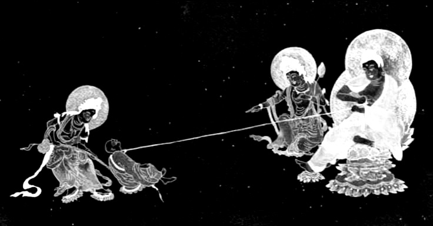
修持《金刚经》可以做到重罪轻报、提前受报，未来必定成佛。释迦牟尼佛曾见过很多佛，也供养了很多佛，但这些功德都不及修持《金刚经》的功德。如果具体说其功德，有些人很难相信。《金刚经》的义理和修持的果报都不可思议。
这时，须菩提向佛问道：“世尊，善男子、善女人发了阿耨多罗三藐三菩提心之后，如何维持？如何降服妄想烦恼？”
佛告诉须菩提：“善男子、善女人，发了阿耨多罗三藐三菩提心的人，应该生这样的心，我应当灭度一切众生。灭度一切众生之后，没有一个众生真实灭度者。为什么呢？须菩提，如果菩萨有我相、人相、众生相、寿者相，那就不是菩萨。所以，须菩提，实际上没有什么法，能让人发阿耨多罗三藐三菩提心。须菩提，你怎么认为？如来在然灯佛处，学到证得阿耨多罗三藐三菩提的方法了吗？”
须菩提回答：“不，世尊，按照我理解的佛所说之义理，佛在然灯佛处，没有学到证得阿耨多罗三藐三菩提的方法。”
佛说：“正是，正是，须菩提，实际上没有什么法能让如来得阿耨多罗三藐三菩提。须菩提，如果有什么法能让如来证得阿耨多罗三藐三菩提，然灯佛就不会给我授记，说我来世会成佛，名号释迦牟尼。实际上没有法能让人证得阿耨多罗三藐三菩提，所以然灯佛给我授记，说：‘你未来会成佛，名号释迦牟尼。’为什么呢？‘如来’的含义就是，一切法都不可得。如果有人说：‘如来证得阿耨多罗三藐三菩提。’须菩提，实际上没有什么法，能令佛证得阿耨多罗三藐三菩提。须菩提，如来所证得的阿耨多罗三藐三菩提，在那个境界里无实无虚。所以如来说一切法都是佛法。须菩提，如来说的一切法不是一切法，只是取名‘一切法’。须菩提，好比说人的身材高大。”
须菩提说：“世尊，如来说人的身材高大不是大身，只是取名叫‘大身’。”
“须菩提，菩萨也是如此。如果菩萨说：‘我应当灭度无量众生。’那他就不是菩萨。为什么呢？须菩提，并没有法称之为‘菩萨’。所以佛说：‘一切法无我、无人、无众生、无寿者。’须菩提，如果菩萨说：‘我应当庄严佛土。’那他就不是菩萨。为什么呢？如来说：庄严佛土即不是庄严，只是取名‘庄严’。须菩提，只有菩萨通达了无我之法，如来才说他是真菩萨。”
1．尔时，须菩提白佛言：“世尊，善男子、善女人发阿耨多罗三藐三菩提心，云何应住？云何降伏其心？”
须菩提又一次问同样的问题：发心求无上正等正觉的人，也就是发大菩提心的人，如何维持这个愿，不让其退转？如何降服自己的妄想烦恼？
对于第二次提问，佛的回答稍微不一样。
善男子、善女人发阿耨多罗三藐三菩提心者，当生如是心。
发大菩提心的人应该有这样的心态或者认知。
我应灭度一切众生，灭度一切众生已，而无有一众生实灭度者。
因为菩萨没有我相、人相、众生相、寿者相，心中没有对众生的分别认知，所以说灭度一切众生，却没有一个众生真灭度者。
何以故？须菩提，若菩萨有我相、人相、众生相、寿者相，即非菩萨。
四相是分别心中产生的相，有四相的时候叫“阿罗汉”，没有四相才叫“菩萨”。
2．所以者何？须菩提，实无有法，发阿耨多罗三藐三菩提心者。须菩提，于意云何？如来于然灯佛所，有法得阿耨多罗三藐三菩提不？
从“所以者何”开始，和上一次回答不一样。上一次佛答：“菩萨于法应无所住，行于布施。”在这里重点是“无所住”，就是不执着，还没有涉及到分别心。经过前面的讲法之后，佛开始讲“无相”，也就是没有分别心的境界。
实无有法，发阿耨多罗三藐三菩提心者：在这里“阿耨多罗三藐三菩提心”是大菩提心。“大菩提心相”和“非大菩提心相”都是分别心中产生的相，在没有分别心的境界里本不存在，我们只是给它取名叫“大菩提心”。
接着佛问须菩提：“如来在然灯佛那里，学到了成就无上正等正觉的法门吗？”也就是成佛的法门。
不也，世尊。如我解佛所说义，佛于然灯佛所，无有法得阿耨多罗三藐三菩提。
须菩提回答说：“根据我对佛所讲的义理的理解，佛陀在然灯佛那里，并没有学到什么可以成就无上正等正觉的法门。”
佛言：“如是如是。须菩提，实无有法如来得阿耨多罗三藐三菩提。须菩提，若有法如来得阿耨多罗三藐三菩提者，然灯佛则不与我授记，汝于来世当得作佛，号释迦牟尼。”
佛回答说：“对对，须菩提，实际上，不存在能成就无上正等正觉的法。须菩提，如果在如来的认知里，还存在能成就无上正等正觉的法，然灯佛就不会给我授记，说你未来当成佛，号释迦牟尼。”
也就是说，然灯佛看到释迦牟尼佛（前世）已经达到了菩萨境界，已经灭了分别心，才给他授记，否则就不会给他授记。
汝于来世当得作佛，号释迦牟尼：这是预言未来的事情。这里重点是“授记”，在佛经里经常出现佛给人“授记”的内容，预言某个人未来会成佛、他成佛的世界叫什么名字、国土名字、佛的名号、还会度多少众生。
关于授记的逻辑，请看《坐禅2》中的详细解释。在这里只讲授记的先决条件，也就是大菩提心。只有发了大菩提心的人才可以得到佛的授记，而且还是不退转的大菩提心才行。目前的我们还有情绪和欲望，就算发了大菩提心，也是靠情绪带出来的欲望所发，随时都会退转。所以才强调要反复地发大菩提心，不断强化这个愿。只有修到四禅以上没有情绪的境界，发的大菩提心才是坚固不退的大菩提心。
有了大菩提心之后，我们的业才会开始减少。如果我们的业一直增加，佛也没有办法预言未来我们什么时候会成佛。只有业开始减少，佛才能根据我们已经拥有的业的总量来推演，消掉全部的业需要多长时间；再根据我们的妄想、分别、执着的程度，来推演需要修多长时间的禅定；根据我们已有的业的总量来看，和我们有缘的众生有多少，也就是要度多少众生。推演出结果后会告诉我们，我们要成佛需要多长时间、要度多少众生、在这期间会见到多少佛等等信息。
以实无有法得阿耨多罗三藐三菩提，是故然灯佛与我授记。作是言，汝于来世当得作佛，号释迦牟尼。
佛说，因为他已经悟到无相的境界，在那里没有成就无上正等正觉的法，所以然灯佛才给他授记，说“你未来当成佛，号释迦牟尼”。
3．何以故？如来者，即诸法如义。若有人言如来得阿耨多罗三藐三菩提，须菩提，实无有法佛得阿耨多罗三藐三菩提。
这句话也是反复地强调前面所讲的义理。
“如来者，即诸法如义”中的“义”：指关于分别心的义理。我们所看到的一切相都是分别心中产生的幻，在没有分别心的境界里本不存在，所以说诸法不可得。
“如来者，即诸法如义”的意思是：如来就是悟到真相（一切法都是分别心中产生的幻）的人。人们说如来证到了无上正等正觉，但是实际上，不存在让佛得到无上正等正觉的法。
4．须菩提，如来所得阿耨多罗三藐三菩提，于是中无实无虚。是故如来说一切法皆是佛法。须菩提，所言一切法者，即非一切法，是故名一切法。
佛告诉须菩提：如来证到的无上正等正觉的境界里，没有实相，也没有虚相。所以如来说一切法都可以称之为佛法。
如来所说的“一切法”也是“非一切法”。这就是两个不同的相——“法相”和“非法相”。两者都是分别心中产生的相，在没有分别心的境界里本不存在。因此可以说，“一切法不是一切法”，也可以说，“一切法等于非一切法”。我们只是给它取名叫“一切法”和“非一切法”。（关于“法”与“非法”的详细解释，请看《Taiguanglin 讲〈楞伽经〉》。）
5．须菩提，譬如人身长大。
须菩提言：“世尊，如来说人身长大则为非大身，是名大身。”
与上同理。“大身”与“非大身”，“长大”与“非长大”都是分别心中产生的相，在没有分别心的境界里本不存在，我们只是给它取名叫“大身”和“长大”而已。
6．须菩提，菩萨亦如是。若作是言，我当灭度无量众生，即不名菩萨。何以故？须菩提，实无有法名为菩萨。
须菩提，菩萨也是如此，菩萨若说“我当灭度无量众生，即不名菩萨”。为什么？须菩提，因为实际上没有法称之为菩萨。
菩萨没有分别心，也就没有四相。“我当灭度无量众生”，这句话里已经包括了我相、人相、众生相，所以有这样的认知就不是菩萨。还有，在没有分别心的境界里，没有佛、菩萨、罗汉、凡夫等相，所以佛说“实无有法名为菩萨”。
如果菩萨带着业，以报身的状态在人间活动，那么就有分别和执着，而且时间和精力都有限，度人就会有选择性，什么人更适合度就度什么人，而不是平等传法。如果这个菩萨一直处在深定当中也可以达到菩萨的境界，最低也能达到四禅或者无色界定，后期也能达到阿罗汉的境界。只要报身一死，哪怕是凡夫的无色界定境界死去，也能在短时间内回到菩萨境界。
在菩萨的意识当中，度人只是平常事。来投胎消业和度人的菩萨都有大菩提心，如果是四大职业的人，是以平等普化心或同体大悲心作为愿力来投生人间。就算菩萨带着自己的业进入轮回，除了消自己的业之外，在传法度人的时候，并不把度人当做什么特别伟大的事，也不会想度人有多大的功德，只是正常地做事而已，就像我们普通人吃饭、睡觉、上班一样。
7．佛说一切法无我、无人、无众生、无寿者。
“法”是妄想、分别、执着的统称。菩萨的境界里没有四相，也就是没有分别心，只有妄想。从菩萨的视角看，众生的妄想、分别、执着都是妄想，没有分别。
8．须菩提，若菩萨作是言，我当庄严佛土，是不名菩萨。
佛土：一般解释为佛教化的国土。实际上有两种世界：一种世界是佛创造或管理的世界，也就是有佛住世的世界；还有一种世界是没有佛住世的世界，也叫“无限地狱世界”。（关于这些内容请看《坐禅2》中的相关章节。）
庄严佛土：度人叫庄严佛土。不是物质层面上的装饰之类，而是真实的度人行为才叫庄严佛土。
因此，这一段的意思是，如果菩萨说“我当度人”，就不能称之为菩萨。
何以故？如来说庄严佛土者，即非庄严，是名庄严。
与上同理。“庄严佛土相”与“非庄严佛土相”都是分别心中产生的相，在没有分别心的境界里本不存在。因此可以说，“庄严佛土不是庄严佛土”，也可以说，“庄严佛土等于非庄严佛土”，我们只是给它取名叫“庄严佛土”与“非庄严佛土”。
9．须菩提，若菩萨通达无我法者，如来说名真是菩萨。
无我法：“我相”是分别心中产生的第一个相，“我相”和“人相”会同时产生（有关分别心的详细内容请看《坐禅2》）。所以“无我”就是指没有分别心的境界，因此真正通达“无我法”才能称之为菩萨。
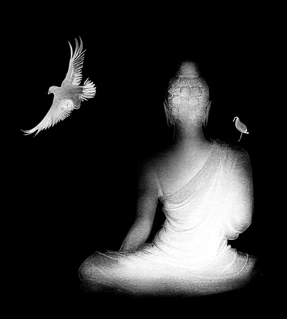
须菩提再一次问，发大菩提心之后如何维持？如何降服妄想烦恼？佛从无分别的境界回答，一切法、一切相都是分别心中产生的幻，菩萨应离一切相而发菩提心。
“须菩提，你怎么认为？如来有肉眼吗？”
“是的，世尊，如来有肉眼。”
“须菩提，你怎么认为？如来有天眼吗？”
“是的，世尊，如来有天眼。”
“须菩提，你怎么认为？如来有慧眼吗？”
“是的，世尊，如来有慧眼。”
“须菩提，你怎么认为？如来有法眼吗？”
“是的，世尊，如来有法眼。”
“须菩提，你怎么认为？如来有佛眼吗？”
“是的，世尊，如来有佛眼。”
“须菩提，你怎么认为？恒河中的所有沙，佛说是沙吗？”
“是的，世尊，如来说是沙。”
“须菩提，你怎么认为？有一恒河沙数那么多的恒河，有所有恒河中的沙数般多的佛世界，它多不多？”
“非常多，世尊。”
佛告诉须菩提：“那么多佛土中的所有众生，他们的若干种心，如来都知道。为什么呢？如来说：诸心都不是心，只是取名为心。所以，须菩提，对过去的认知不可得，对现在的认知也不可得，对未来的认知也不可得。”
1．对于五眼有不同的解释。
第一个叫“肉眼”。在《大智度论》第三十三卷中说的“肉眼”基本上和我们普通人的肉眼一样，只能看见近处，看不见远处；无法同时看见前后；有光才能看见，没有光就看不见；能看到外界，却看不到身体内部，这就叫“肉眼”。
但是在其他佛经中的解释，和大乘佛法的理解是：肉眼也算神通。肉眼是在我们所处的维度世界可以无限观察的能力。可以超远距离观察，叫“遥视”；可以观察微观世界，叫“微视”；可以观察物体内部，叫“透视”；没有光的情况下也能观察，叫“暗视”。但是不能超越所处的维度观察其他道的众生。
第二个叫“天眼”。天眼可以观察其他道的众生，至少可以从我们所处的世界往下看，可以看到鬼道和地狱道。如果修为高还能看到天界，修行者的修为达到哪个天就能看到哪个天界。
第三个叫“慧眼”。有些书上说，慧眼是能读懂佛经的智慧之眼。我个人认为读懂佛经不算神通，我认为的慧眼是能读懂他人心思的能力，也就是“他心通”。
那怎么读他人的心思？主要是看阳神光。不同的情绪和执着有不同的颜色，还会有细微的变化；只要能够观察他人的阳神光，根据颜色和变化就能读懂他人的心思。修行到一定境界的人，哪怕不在定中观察，也能感应到周围人的情绪。尤其是别人对自己有不好的情绪的时候，可以非常清晰地感应到。因为从清净的人的视角看一个情绪多的人，特别是有恶念的人，是很容易观察到的；不是观察表情等外相，而是从意识深处能感受到他不好的情绪。
第四个叫“法眼”，能看众生之根器的眼。法眼和慧眼有什么区别？什么叫根器？主要看两方面，一个是习气，就是妄想、分别、执着的多寡，还有一个是业的轻重。法眼能同时看到其他众生的习气和业，而慧眼只能看到当下的状态，看不到整体的习气和业。所以真正的法眼是修到阿罗汉以上的境界才能拥有。
当然，修到四禅或者无色界定的人，多多少少能看出其他众生的根器，比如一个人的各种习气有多重、淫欲有多重、食欲有多重、杀戮之心有多重。但是关于业，最多只能看到和此生有关联的部分，所以凡夫的法眼很有局限性。
第五个叫“佛眼”，唯有佛才拥有的感知能力叫“佛眼”。佛的智慧叫“法界体性智”，佛的意识覆盖整个法界，可以说我们都生活在佛的意识当中，因此佛可以如实地观察到所有众生的每一个妄想。佛眼是最高级别的神通，也叫“漏尽通”，就是知道一切的智慧。
实际上，佛在这里把这些感知力称之为“眼”，也是方便说法。因为眼在我们凡夫的认知里就是用来看的肉眼，是五根当中获取信息最多的根。所以用“眼”这个字，大部分人都能理解。天眼、慧眼、法眼，乃至于佛眼，都不是我们所用的肉眼。凡夫的天眼、慧眼是从阳神光直接观察的，就是以“照”的方式来看。什么叫“照”？用你的阳神直接覆盖其他众生叫“照”。在你阳神覆盖的范围内，所有众生的妄想都能感知到，这叫“照见”。到了阿罗汉、菩萨、佛的境界，连阳神都没有，也就没有覆盖和不能覆盖的区别，所以法眼和佛眼指的是意识遍虚空的状态。
2．“须菩提，于意云何？如恒河中所有沙，佛说是沙不？”
“如是，世尊，如来说是沙。”
“须菩提，于意云何？如一恒河中所有沙，有如是沙等恒河，是诸恒河所有沙数佛世界，如是宁为多不？”
“甚多，世尊。”
上面也有同样的说法。就是恒河沙数的平方，这么多数量的佛世界，它多不多？须菩提回答：“甚多，世尊。”
3．佛告须菩提：“尔所国土中所有众生，若干种心如来悉知。何以故？如来说诸心皆为非心，是名为心。所以者何？须菩提，过去心不可得，现在心不可得，未来心不可得。”
“若干种心”中的“心”：指众生所拥有的妄想、分别、执着。
诸心皆为非心，是名为心：与上同理。“心”与“非心”都是分别心中产生的相，在没有分别心的境界里本不存在。因此可以说，“诸心都不是心”，也可以说，“诸心等于非心”，我们只是给它取名叫“心”与“非心”。
过去心、现在心、未来心：这里讲的是时间分别。（关于时间的产生，详细解释请看《坐禅2》中有关分别心的部分。）时间从妄想的先后分别中产生。这里的过去心、现在心、未来心是指意识层面上，产生时间观念的分别心，也就是过去相、现在相、未来相。
佛告诉须菩提，恒河沙数平方的佛世界当中，所有众生的妄想、分别、执着，佛都知道。因为“诸心皆为非心，是名为心”，因此过去相、现在相、未来相都不应该有。
如来有“肉眼”“天眼”“慧眼”“法眼”“佛眼”。如来的意识覆盖整个法界，因此所有众生的妄想、分别、执着，如来都知道。在没有分别心的境界里，“众生之诸心”与“非心”，两种相都不存在，也不存在所谓的“过去、现在、未来”，也就是时间。
“须菩提，你怎么认为？如果有人用可以装满三千大千世界的七宝布施，那么此人以此布施的因缘获得的福德多不多？”
“是的，世尊，此人以此布施的因缘获得的福德非常多。”
“须菩提，如果福德真实存在，如来就不说福德多。因为福德本无，如来说得到的福德多。”
1．须菩提，于意云何？若有人满三千大千世界七宝以用布施，是人以是因缘得福多不？
“因缘”的“因”：是产生某种结果直接的或内在的原因。
“因缘”的“缘”：在以往的佛学当中都理解为某种外在的环境条件。比如我杀生了，这是因；未来必定会有被杀的果报，这是果。如何阻止果报的发生？在比较普及的佛法理论中都会这么回答：先把自己的杀心灭掉，持戒，不再杀生，这样就会投生到一个没有杀戮的世界里。也就是把可以产生果报的各种外部条件都给灭掉，果报就不会产生。
那么“缘”是什么？在我的理论里，“缘”是和其他众生的互动。三禅天以下的众生都有情绪，有情绪就会有欲望，带着互动的欲望和其他众生互动，双方的情绪都有变化，这叫“业”。有了这种“业”才称之为“有缘”。
所以在这里，佛说的“因缘”是一个人布施于另一个人的过程，也就是互动。在这个过程当中两个人都有了情绪上的变化，布施的人和接受布施的人都开心了，这样的结果就称之为“有缘”。
我们平时也会说自己和某人有缘，讲的都是过去式，意思就是自己曾经和某人见过面、有过互动，也有过情绪上的变化。所以在这里佛说的“因缘”就是指一个人布施于另一个人的互动行为。
2．须菩提，若福德有实，如来不说得福德多。以福德无故，如来说得福德多。
佛说：如果福德是真实存在的东西，如来就不会说福德多。正因为福德并不是真实存在的东西，所以如来才会说福德多。
这句话怎么理解？
如果福德是真实存在的东西，那么佛就会用某种表现数量的词直接描述。“多”这个字虽然也表现数量，但它具有相对性，要和某个参照物比较之后，才可以说“多”或“少”。
如果某个事物有明确的数量，佛就会用算术的方式来表现。比如佛经里经常出现的“恒河沙数”“无量”“阿僧祇”等词。
但是佛不用这类表现数量的词，而是用描述相对性的“多”来描述。因为福德并不是真实存在的东西，它的本质是空，所以没有办法用这种表现数量的词汇来描述。

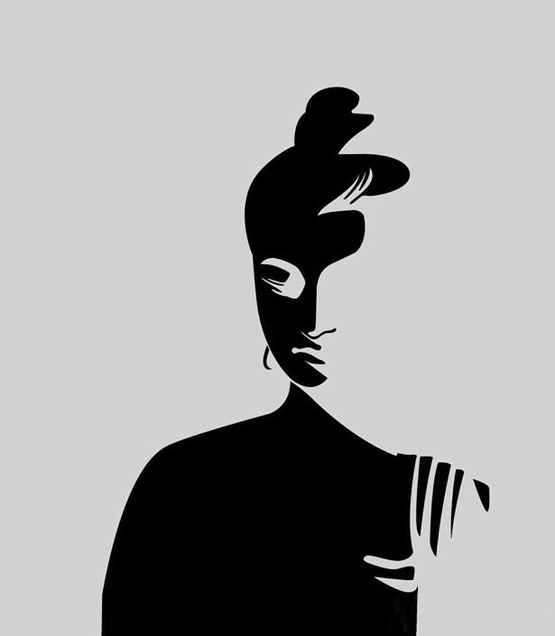
佛说，福德并不是真实存在的东西，在没有分别心的境界里，福德也不存在，所以用“多”这个字来表现。
“须菩提，你怎么认为？可以根据佛的具足色身见到真正的佛吗？”
“不能，世尊，真正的佛不能以具足色身见到。为什么呢？如来说的具足色身不是具足色身，只是取名叫‘具足色身’。”
“须菩提，你怎么认为？可以根据具足诸相见到真正的如来吗？”
“不能，世尊，真正的如来不能以具足诸相见到。为什么呢？如来说的诸相具足不是具足，只是取名叫‘具足’。”
1．须菩提，于意云何？佛可以具足色身见不？
不也，世尊，如来不应以具足色身见。
“具足色身”中的“具足”是圆满之意。“色”是我们看得见的物质世界的统称。“具足色身”就是我们能看得见的圆满肉身。
佛有三身、四身的说法。三身是“法身”“报身”和“化身”。佛或菩萨处在他最高境界的状态时称之为“法身”；带着业报投胎到人间叫“报身”；佛或菩萨用神通创造一个形象给众生看，叫“化身”。如果说佛有四身，那么还有一个身叫“应身”。应身就是为了回应众生之诉求，而显现出来的佛身。本质上和化身一样，只是先有众生的诉求而已。
佛经里说，佛的身体有三十二种殊胜相和八十种好，有这种特征的身体叫“具足色身”。但是真正的佛没有身体，所以不能用看得见的色身求见如来。
2．何以故？如来说具足色身，即非具足色身，是名具足色身。
与上同理。“具足色身”和“非具足色身”都是分别心中产生的相，在没有分别心的境界里本不存在。因此可以说，“具足色身不是具足色身”，也可以说，“具足色身等于非具足色身”，我们只是给它取名叫“具足色身”。
3．须菩提，于意云何？如来可以具足诸相见不？
不也，世尊。如来不应以具足诸相见。何以故？如来说诸相具足即非具足，是名诸相具足。
这一段也与上同理。
佛问须菩提：以具足诸相求见如来，可以吗？须菩提回答说：不能。因为如来说的“具足诸相”和“非具足诸相”都是分别心中产生的相，在没有分别心的境界里本不存在。因此可以说，“具足诸相不是具足诸相”，也可以说，“具足诸相等于非具足诸相”，我们只是给它取名叫“具足诸相”。

不可以用看得见的形象求见如来，因为所有的相都是分别心中产生的幻，真实的佛没有看得见的相。
“须菩提，你不要以为佛有这般念头：‘我应当有所说法。’不要有这样的想法。为什么呢？如果有人说如来说过什么法，那就是谤佛，是因为不理解我所说的法的缘故。须菩提，说法者实际上无法可说，只是取名叫‘说法’。”
此时，慧命须菩提向佛说道：“世尊，到了未来世，有众生听到这样的义理，还会生起信心吗？”
佛说：“须菩提，他们不是众生，也是众生。为什么呢？须菩提，众生所说的众生，如来说不是众生，只是取名叫‘众生’。”
1．须菩提，汝勿谓如来作是念，我当有所说法，莫作是念。何以故？若人言如来有所说法即为谤佛，不能解我所说故。须菩提，说法者无法可说，是名说法。
“法”与“非法”，“说法”与“非说法”都是分别心中产生的相，在没有分别心的境界里本不存在，我们只是给它取名叫“法”和“说法”。
说法者无法可说：这一句根据断句与否，有不同的解释。如果不断句，“者”是说法的人，因此译为“说法的人无法可说”；如果断句，写作“说法者，无法可说”，那么“说法者”是说法的行为，因此译为“所谓说法，实际上无法可说。”这两种解释都不影响本段的理解，都是在说无法可说。
2．尔时，慧命须菩提白佛言：“世尊，颇有众生于未来世闻说是法，生信心不？
“慧命”指法身以智慧为生命。把追求智慧作为生命的第一目标的人，也就是求菩提道的人。
须菩提是追求无上菩提道的人，他本来就是阿罗汉，现在学法正在往菩萨的方向努力，所以叫“慧命须菩提”。
与之相反的叫“苦命凡夫”或者“苦命众生”。为什么叫苦命？凡夫追求的是人世间的幸福。佛说人世间唯有苦，凡夫认为的苦叫“苦中之苦”，也叫“苦苦”；凡夫认为的快乐叫“坏苦”，坏就是变质、变坏的意思。凡夫所追求的快乐一旦变质，马上会变成痛苦，所以叫“坏苦”。追求世间幸福的人最终都会堕落到痛苦当中，所以叫做“苦命凡夫”或者“苦命众生”。
须菩提问佛：未来有众生听到《金刚经》里讲的有关无相的义理，会相信吗？
3．佛言：“须菩提，彼非众生非不众生。”
佛先不回答须菩提关于众生会不会生信心的问题，因为须菩提问的是未来世的众生，所以佛先讲须菩提意识中关于未来众生的认知。要从意识层面上先破须菩提的众生相，所以回答说：“彼非众生非不众生。”“非众生”是否定，“非不众生”用了两次否定，就变成了肯定，解释为：是众生。
佛说：须菩提，那些未来众生，既不是众生，也是众生。
4．何以故？须菩提，众生众生者，如来说非众生，是名众生。
与上同理。“众生”与“非众生”都是分别心中产生的相，在没有分别心的境界里本不存在。因此可以说，“众生不是众生”，也可以说，“众生等于非众生”，我们只是给它取名叫“众生”。
佛说，众生认为的众生，如来说他们不是众生，只是取名叫“众生”。
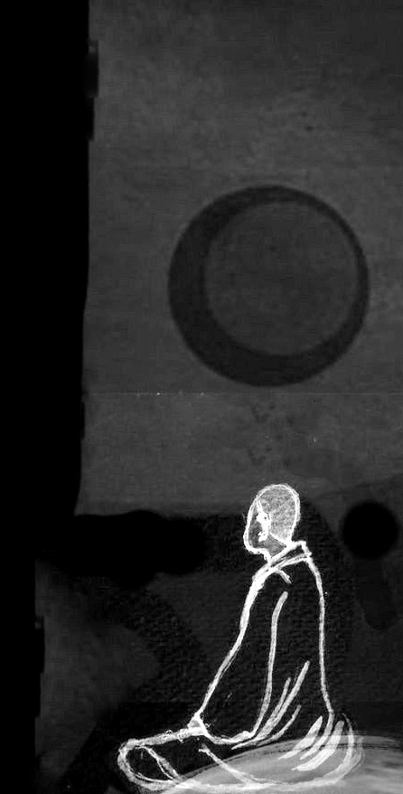
在佛的境界里没有妄想和分别心，所以对于佛来说无法可讲。我们认为的“说法”都是分别心中产生的相，佛在讲法时也没有“说法相”。我们所说的“众生”也是分别心中产生的相，在没有分别心的境界里，没有“众生”与“非众生”两种相。
须菩提问佛：“世尊，佛证到阿耨多罗三藐三菩提（无上正等正觉），实际上没有什么可得到的吗？”
佛回答：“是的，须菩提，我在阿耨多罗三藐三菩提上没有一点法可得，只是取名为‘阿耨多罗三藐三菩提’。”
这一章的重点是无有可得。佛法的修行是以“舍”为主，并不是“得”。就是从意识层面上把执着一个一个灭掉，智慧就会自然显现。我们的妄想、分别、执着越少，智慧就越高。智慧一直都在，只是被妄想、分别、执着覆盖住了而已。
就算是身体层面上的修行，讲究的是清静无为，而不是“得”，本质上还是“舍”，要舍弃各种造作的习气。有些人就喜欢讲“能量、气”这类东西，好像我们可以从外部得到什么似的，到了一个地方就喜欢说这里的“气场好”“能量强”等等。在这种认知里，已经把自己和世界对立了起来，也就是有“我相”和“人相”。学习大乘佛法要确立正知正见，我们所看到一切，乃至虚空都是我们意识里产生的幻境，并不在意识之外。因此，我们所处的环境是我们的习气和业的反映，都是虚妄。如果我们的修为到了一定境界，自然就不会在乎这些外部环境。
关于饮食的问题，虽然我们的肉身是靠吃东西来维持，的确是从外部得来的。但我们也要知道，吃这种行为本身就是“贪”，是执着，也是要灭的。吃的习气出现在初禅第一天，在淫欲之上，因此灭起来比淫欲难，可修行就是行难行之事，忍难忍之欲的过程。一开始都很难，随着修为提高，我们也会发现，对食物的执着越来越少了，吃得也越来越清淡了。
至于具体的食物，首先戒肉是必须的，其他的素食，大部分人吃了都无所谓，没什么太大的影响。等修为到了一定境界，身体进一步清净之后，就能感知到有些素食对身体有影响，这个时候就自然而然地会减少摄取。比如，不吃谷物，还要少吃蛋白质含量高的食物，少吃盐，等等。
无上正等正觉不是得来的，在佛的境界里无有所得。
“还有，须菩提，法本身平等，没有高下之分，只是取名叫‘阿耨多罗三藐三菩提’（无上正等正觉）。以无我、无人、无众生、无寿者的心态修一切善法，就能证到阿耨多罗三藐三菩提。须菩提，我们所说的善法，如来说不是善法，只是取名叫‘善法’。”
1．复次，须菩提，是法平等无有高下，是名阿耨多罗三藐三菩提。
是法平等无有高下：阿罗汉没有执着心，所以从阿罗汉的境界上看，一切法平等。
阿罗汉的境界有三种说法：平等、有分别、不住相。“住”是执着，“不住相”就是光有“相”，也就是分别心，但没有执着。这里“高下”是执着，认为哪个高，哪个低，就是有“我见”。没有高下的情况下一切法平等，是单纯的有分别心的状态。
在这一段里，佛把有分别心的阿罗汉境界也叫“阿耨多罗三藐三菩提”。从我们凡夫的视角看，比凡夫高一个阶段，也就是没有执着的境界，也可以称之为“阿耨多罗三藐三菩提”，都是往成佛的方向努力的过程。
2．以无我、无人、无众生、无寿者修一切善法，即得阿耨多罗三藐三菩提。
无四相就是菩萨的境界。在菩萨的境界修一切善法即得阿耨多罗三藐三菩提（无上正等正觉）。
从凡夫的视角看，追求成为阿罗汉——达到无执着的境界，叫“阿耨多罗三藐三菩提”；追求成为菩萨——达到无相的境界，也叫“阿耨多罗三藐三菩提”；追求成佛——达到没有一切妄想的境界，也叫“阿耨多罗三藐三菩提”。
3．须菩提，所言善法者，如来说即非善法，是名善法。
善法：与恶法相对应。通常讲的善法有两种，世间的善法叫“五戒十善”，出世间的善法叫“三学六度”。
先讲世间的善法——五戒十善。不杀生、不偷盗、不邪淫、不妄语、不喝酒叫五戒。十善分为身、口、意三种业，身业有三：不杀生、不偷盗、不邪淫，这和五戒一样；口业有四：不恶口、不两舌、不妄语、不绮语；意业有三：不贪、不嗔、不痴。贪、嗔、痴也叫“三毒”。以上身三、口四、意三，十种业合称“十善法”。
杀、盗、淫、妄、酒是佛教的基本五戒，相信大部分人都知道，在这里就不展开讲。
意业中的贪，指对顺境的贪爱之心，包括对于物质、权利、名望的贪婪，还包括食欲、淫欲、睡眠欲等各种感官享受，都叫“贪”。
嗔，指对逆境的嗔恨之心。愤怒、厌恶、嫉妒等不好的情绪都叫“嗔”。
痴，在凡夫的境界里，不信因果就叫“痴”。和别人互动的时候多想想，这样的事情发生在自己身上，自己会不会开心，这叫“己所不欲勿施于人”。如果一个人足够成熟，就会知道人各有志，不可强求，自己非常喜欢的事情，别人不一定喜欢，所以和别人互动的时候尽量尊重别人的选择和喜好，这叫“己所甚欲勿施于人”。
口业有四：
恶口：咒骂、诅咒、恶语骂人的行为叫恶口；
两舌：背后说人坏话、挑拨离间等行为叫两舌；
妄语：就是说谎。在这里重点是发心，为了骗取他人的利益，伤害他人的感情而说谎就是恶业。在现实生活中没有人不说谎，一般善意的谎言，礼节性的赞美不算恶业。还有一种妄语叫“大妄语”，指未证言证，妄称自己证果，甚至自称佛菩萨转世，或者暗示自己是佛菩萨转世等。《楞严经》里说大妄语的果报是死后直堕地狱。
绮语：“绮”是华丽的意思，无益浮词，华妙绮丽，就是过度夸张。有些人说话非常夸张，已经超过了原来的意思，这种说辞叫“绮语”。谈说淫欲导人邪念也叫“绮语”。
杀生、偷盗、邪淫；恶口、两舌、妄语、绮语；贪、嗔、痴，合起来叫“十恶业”。与之相反，不造十恶业就叫“十善业”。
出世间的善法叫“三学六度”。三学是戒、定、慧。由戒生定，由定生慧，这是佛教主张的基本修行原理。
戒律在佛法中非常重要，持戒是修行的第一步，先不做违背戒律的事，其次才是做佛法所倡导的事，包括修行。所以不管修的是人世间的法，还是出世间的法，都是以戒为本。有了戒行才能生出定。
杀、盗、淫、妄、酒基本五戒当中，在这里只讲淫戒，因为和过去相比，现在的社会环境和道德观念的确有了很大的变化。
在过去，两个人结婚要有父母之命、媒妁之言。到我们爷爷、奶奶那一代人都是如此，很多时候，一对新人是在洞房时才第一次见面；到了我们父母那一代，多多少少有了自由恋爱，但还是要听父母话；到我们这一代，已经实现了自由恋爱和自由婚姻，虽然父母的认可也有一定的必要性，但已经不再像旧社会一样起着决定性作用。
所以我认为现在只要是两情相悦、双方同意的性行为就不能算邪淫，就算没有登记结婚也没有关系，这都是属于“业”当中的事情。两个人前世有业缘，这一世才能相见和相爱，也会发生性关系。这种两个人的剧本里都有的业不能算邪淫。
至于婚外恋和性交易，哪怕当事人都愿意，那也算邪淫。婚外恋是伤害原配的行为，给其他人造成了不好的情绪，算造恶业，所以是邪淫。性交易是用钱买性，虽然双方都同意，但不是相爱，也不承担责任，所以是邪淫。
那么自慰算不算邪淫？我个人认为不算，因为没有和其他众生互动，所以也就没有造业。自慰只能算是习气的展露，自慰多了虽然也会损耗福报，但只要灭了淫欲，就没有其他后果。在这里我们要先有正知正见，知道淫欲是要灭的，不能一直纵欲；不仅伤害身体，还会消减福报。有了这样的正见之后修行，当淫欲发作，痛苦不堪的时候适当的自慰也无可厚非。
酒是为了防前面四戒。因为喝酒会乱性，人的意志力会降低很多，甚至失去意识，因此尽量不喝酒。对于在家人，我们只要求不喝醉，不要求严格持戒。如果对戒律的要求过高，会降低众生接受佛法的程度，不利于度人。在目前的社会环境下，出来工作很难做到滴酒不沾，凡事尽力就可以了。
定：指禅定修行。（具体内容请看《坐禅1》和《坐禅2》中的“初禅”部分。）
慧：智慧，佛法追求的智慧。神通也是智慧的表现方式。修到一定程度多多少少都会出现一些神通，但是不需要在意，更不能追求，也不要到处跟人讲。佛在世的时候对自己的弟子们也是这么要求的。在佛法里，智慧分五等——成所作智、妙观察智、平等性智、圆明镜智、法界体性智。（详细内容请看《坐禅1》。）
到这里戒、定、慧三学都讲完了。下面讲六度。
六度：布施、持戒、忍辱、精进、禅定、智慧，叫菩萨的六度法，也是出世间的法。
布施、持戒、忍辱：这三项与业相关。布施是多造善业；持戒就是不再造恶业；忍辱是当恶报来临的时候选择忍，让恶业的轮转到这里结束。
精进：是修行人的态度，与之对应的是懈怠。修大乘的人要精进修心、精进消业。
禅定：就是修心的主要修行法门，是灭自己的妄想、分别、执着的主要修法。
智慧：也叫“般若”，菩萨的智慧是专门消业的智慧。
以上的五戒十善和三学六度合称为“善法”。
回到原文。“善法”与“非善法”都是分别心中产生的相，在没有分别心的境界里本不存在。因此可以说，“善法不是善法”，也可以说，“善法等于非善法”，我们只是给它取名叫“善法”与“非善法”。
在没有执着心的境界里，一切法平等，没有高下之别，这叫追求无上正等正觉。菩萨在没有分别心的境界里，修一切善法，可以证得无上正等正觉。“善法”与“非善法”都是分别心中产生的相，在没有分别心的境界里本不存在，因此“善法”等于“非善法”，我们只是给它取名叫“善法”与“非善法”。
“须菩提，假如三千大千世界中的所有须弥山王那么多的七宝聚在一起，有人以此布施。如果另有一人，受持读诵此般若波罗密经，乃至四句偈，还为他人解说。那么前者布施的福德不如后者福德的百分之一，百千万亿分之一，乃至算术、譬喻都不能描述。”
1．须菩提，若三千大千世界中所有诸须弥山王，如是等七宝聚，有人持用布施。
一个三千大千世界有十亿个小世界，也就有十亿个须弥山王。如果有人拿这么多的七宝持用布施。这么大的财布施应该有很大的福德。
2．若人以此般若波罗密经乃至四句偈等，受持读诵，为他人说，于前福德百分不及一，百千万亿分乃至算数、譬喻所不能及。
如果有人信受和读诵此般若波罗蜜经（《金刚经》），哪怕是四句偈等，或者给别人讲经。此人获得的功德是前者财布施获得的福德的百千万亿倍，甚至算术、譬喻都不能描述，其功德有这么大。
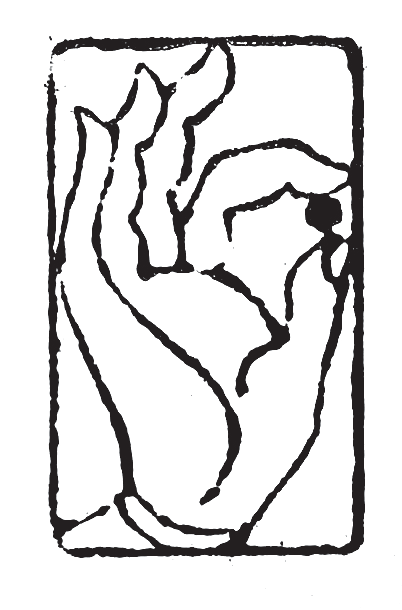
受持读诵《金刚经》，为他人讲经的功德巨大，远大于任何财布施带来的福德。
“须菩提，你怎么认为？你们不要认为如来会这么想：‘我当度众生。’须菩提，不要这么想。为什么呢？实际上没有众生需要如来来度，如果有众生需要如来来度，如来就有我相、人相、众生相、寿者相。”
“须菩提，如来说‘有我’就是‘没有我’，然而凡夫们以为有我。须菩提，所谓的凡夫，如来说不是凡夫，只是取名叫‘凡夫’。”
1．须菩提，于意云何？汝等勿谓如来作是念，我当度众生。
你们不要认为如来会有“我当度众生”这样的想法。因为如来没有我相、人相、众生相、寿者相，所以在如来的意识里，没有正在度人的自己，也没有要度的众生，一切都是空。
2．须菩提，莫作是念。何以故？实无有众生如来度者，若有众生如来度者，如来则有我、人、众生、寿者。
一开始读《金刚经》最容易产生误解的地方就是，它到底在讲客观事实，还是意识层面？众生到底有，还是没有？
法界有无数的自性，每一个自性都会产生妄想，就会出现无数的众生，这是客观存在的事实。我们修行人追求的是，在我们的意识层面上把分别心灭掉，也就是对自己和对众生的认知彻底灭掉，这样就可以进入无分别的境界，成为菩萨；而不是把真实存在的自性灭掉，自性是没有办法被灭掉的，所以叫“自性恒常”。如此理解《金刚经》才是正解。
在这一段经文里佛讲的是意识层面，在如来的意识里没有需要度的众生，如果如来的意识里有可度的众生，那么如来就有我相、人相、众生相、寿者相，那就不是如来了。
3．须菩提，如来说有我者，即非有我，而凡夫之人以为有我。
如来说有我者，即非有我 ：与上同理。“有我”与“非有我”都是分别心中产生的相，在没有分别心的境界里本不存在。因此可以说“有我不是有我”，也可以说，“有我等于非有我”，我们只是给它取名叫“有我”与“非有我”。
凡夫之人以为有我 ：什么是凡夫？在轮回中正在受苦的，有妄想、分别、执着的众生叫“凡夫”。凡夫以为有“我”，那么“我”是什么？在佛经里讲凡夫有四大颠倒——“常、乐、我、净”，这也是有为法中的四大颠倒。
常颠倒：凡夫把变化多端的、不停变化的世界当作一个恒常的世界来看待。古人认为宇宙是一直存在的，这叫“常颠倒”。其实宇宙并不是恒常不变的，宇宙有成、住、坏、空四个变化过程。
乐颠倒：我们凡夫所追求的乐实际上是苦，但是凡夫认为是真实的快乐。
我颠倒：有肉身的凡夫把肉身当作是“我”，把正在起妄想的意识当作是“我”。
净颠倒：凡夫以为只要静静地待着，脑子里不起妄想就是清净了。这不是真实的清净，情绪、注意力、文字妄想只是暂时蛰伏而已，只要习气还在，遇到适当的缘，还会生起。只是凡夫自认为是清净。
原文里的“有我”就是凡夫的“我颠倒”。
除了有为法的四颠倒，还有无为法的四颠倒，也就是声闻、缘觉的错误认知。声闻、缘觉是四禅天以上的众生，已经回到了阳神状态，身体是发光的球体，在这样的状态里也有四颠倒，也分“常、乐、我、净”。
他们还是认为他们的世界是真实存在的世界，这叫“常颠倒”；处在阳神状态下是很快乐的，他们认为这种快乐是真实的，这叫“乐颠倒”；他们认为这个发光的球体就是真实的自己，这叫“我颠倒”；他们在那个境界里也有“净”，不起妄想的“净”，他们认为那个“净”是真实的净，这叫“净颠倒”。这四个叫“无为法的四颠倒”。
4．须菩提，凡夫者，如来说即非凡夫，是名凡夫。
与上同理。“凡夫”与“非凡夫”都是分别心中产生的相，在没有分别心的境界里本不存在。因此可以说，“凡夫不是凡夫”，也可以说，“凡夫等于非凡夫”，我们只是给它取名叫“凡夫”。

如来没有四相，所以在如来的意识里，没有度人的自己和要度的众生。“有我”与“非有我”，“凡夫”与“非凡夫”都是分别心中产生的相，在没有分别心的境界里本不存在。
佛问须菩提：“你怎么认为？可以根据如来的三十二相来见到真正的如来吗？”
须菩提回答说：“可以的，可以根据如来的三十二相来见到真正的如来。”
佛说：“须菩提，如果可以根据如来的三十二相见到真正的如来，那么转轮圣王就是如来。”
须菩提对佛说：“世尊，按照我理解的佛说的义理，不能根据如来的三十二相来见到真正的如来。”
此时，世尊说了一段偈语：如果以色相求见如来，以音声求见如来，那是行邪道，不能见到真正的如来。
1．“须菩提，于意云何？可以三十二相观如来不？”
须菩提言：“如是如是，以三十二相观如来。”
佛言：“须菩提，若以三十二相观如来者，转轮圣王即是如来。”
须菩提白佛言：“世尊，如我解佛所说义，不应以三十二相观如来。”
佛问的意思是：能不能把三十二相当做判断如来的标准，有这样殊胜的外相就认为是如来，没有这样的外相就不是如来。须菩提回答说可以。佛说，如果根据三十二相来判断是不是如来，那么转轮圣王就是如来。因为转轮圣王是等觉菩萨，也可以现出三十二相。
佛的意思是不能用外相判断如来。
2．尔时，世尊而说偈言：若以色见我，音声求我，是人行邪道，不能见如来。
现实里有很多人说自己梦见了佛菩萨。当我们还执着于相，认为佛菩萨有看得见的形象的时候，才会出现这种梦境。在梦里，佛菩萨通常会以我们认为的形象出现，或者现出我们信任的某个人的形象。
修行到一定境界之后，佛菩萨不会在梦中以这种看得见的形象出现，而是用语言来跟我们交流，或者直接把重要的信息告知于我们，但没有音声。
如果有音声，我们应该能用形容词描述它，比如是男声或者女声，声音尖锐或粗犷，但实际上描述不了，因为它不是音声。但这个语言有语气，通常都是以我们熟悉和信任的人的语气来跟我们说。所以在梦中，或者比较浅的禅定境界当中，意识里会出现一些有语气的语句，还告诉我们某些重要信息，那么可以认为是佛菩萨在向我们发信息。
修行再提升一个境界之后，佛菩萨会用情绪向我们发信息。我们会感知到有其他意识进来了，实际上就是意识重叠，我们还会明确地感知到，这个意识的情绪在变化。他会用情绪的变化来告诉我们什么事该做或者不该做。还有佛法上的一些重要义理也可以用这种情绪变化的方式来告诉我们。但是要修到这个境界不容易，大部分人都是在梦里或者较浅的禅定当中，看到有形象的佛菩萨。如果你把这个作为“圣解”（正确的观念），就有可能会沉迷于此。
我们要知道，佛菩萨的意识遍虚空，一直和我们重叠在一起，也可以说我们都生活在佛菩萨的意识当中，所以佛菩萨知道我们的所有想法。当我们知道了这个真相，并且深信不疑，也不再以形象求见佛菩萨的时候，佛菩萨就不会在梦里用形象来给我们发信息了。
怎么判断进来的意识是佛菩萨，而不是魔？要知道所有的魔都在欲界六天当中，也就是有淫欲。等我们灭尽淫欲进入初禅之后，就不会再受外魔的干扰。一旦有淫欲的意识接近我们，我们马上能感知到。因为境界越高，意识越清明；境界越低，意识越浑浊，用清明的意识感知浑浊的意识，那是非常的清晰。所以，当这些有淫欲的天魔接近我们的时候，哪怕它当下没有起淫欲，我们也能马上感知到，也就知道这不是佛菩萨。
在《坐禅1》中就教大家，一定要先选一个咒语来修持，要反复念，念到梦中都能自动背诵的程度。不管是《大悲咒》，还是《楞严咒》，任何咒都可以。在睡梦中，还是禅定中，只要有不好的意识接近我们，我们马上就可以念出咒语，把他们吓跑。

不能以色相或者音声求见如来。佛菩萨的意识遍虚空，没有我们看得见的形象，也没有听得见的音声。如果以色相或音声求见如来，那就是行邪道。
“须菩提，如果你这样想：‘如来不是因为有了具足相，才能证得阿耨多罗三藐三菩提。’须菩提，不要这样想：‘如来不是因为有了具足相，才能证得阿耨多罗三藐三菩提。’须菩提，如果你这样想：‘发阿耨多罗三藐三菩提心者，说诸法断灭。’不要这样想。为什么呢？发阿耨多罗三藐三菩提心者，于法不说断灭相。”
1．须菩提，汝若作是念……须菩提，莫作是念
须菩提，如果你这样想……就不要这样想，想的内容是什么呢？
如来不以具足相故，得阿耨多罗三藐三菩提。
“如来不是因为有了具足相，才能证得阿耨多罗三藐三菩提（无上正等正觉）。”——这是想的内容，貌似这个想法是正确的。但是佛叫须菩提不要这样想，那是不是应该想：“如来是因为有了具足相，才能证得阿耨多罗三藐三菩提。”——这么理解也不对。
有些人认为外相如何，才能证得什么果位。这是把因与果颠倒过来的错误认知。正确的理解是，先修到了哪个果位，才能出现什么样的外相。但在这一段里，这也不是佛要说的内容。
《金刚经》里反复强调的义理是，所有的相都是分别心里产生的幻，“具足相”与“非具足相”，“阿耨多罗三藐三菩提”与“非阿耨多罗三藐三菩提”，都是分别心里产生的相，在没有分别心的境界里本不存在。我们只是给它们如此取名罢了。
所以在这一段里，佛要说的是，“具足相”和“阿耨多罗三藐三菩提”没有任何关系。“具足相”是分别心里产生的相，本不存在，自然和“阿耨多罗三藐三菩提”产生不了因果关系。
2．须菩提，汝若作是念，发阿耨多罗三藐三菩提心者，说诸法断灭，莫作是念。何以故？发阿耨多罗三藐三菩提心者，于法不说断灭相。
关于“断灭相”有两种解释：一种是外道断灭论；还有一种是佛道断灭论。
外道断灭论比较好理解，是把死亡当作终结的认知。只要人一死，意识就会彻底消失，从此不会再出现在这个世界里。
外道断灭论有七种：
第一种是人道肉身的断灭论。认为在人道，我们的肉身消失，意识就会消失，人在这个世界中彻底消失。
第二种叫欲界人的断灭论。外道也可以修到欲界，断灭论认为欲界天的众生如果死了，他的意识和身体会彻底消失，从此不再出现在这个世界里。
第三种是色界人的断灭论。色界开始已经是阳神状态，初禅、二禅、三禅、四禅都可以称之为色界天。断灭论认为这些天的众生死了，他们的意识和身体也会彻底消失，不会再出现在这个世界里。
再往上四种断灭论分别对应无色界四天——空无边处天、识无边处天、无所有处天、非想非非想处天。认为无色界天中的众生死了，他们的阳神和意识都会彻底消失，不会再出现在这个世界里。
初禅开始，三禅、四禅都是阳神状态，但是初禅天的众生不是圆球形阳神，稍微有人的形象。再往上从二禅开始，阳神身体基本上恢复成为一个由光子组成的发光的球体。断灭论认为当身体死亡的时候，意识也会消失，从此不再出现在这个世界里。这样把死亡看作终结的观念叫“外道断灭论”。
还有一种叫佛道断灭论。最初佛传法的时候有一些弟子们信奉佛道断灭论，但是佛在不能把“诸佛同体”的真相和从这里延伸出来的业彻底讲清楚的情况下，没有办法驳斥佛道断灭论。后来在编撰佛经的时候和外道断灭论混为一谈，其名相逐渐消失在历史中，但佛道断灭论的认知被一些宗派认可，出现了“即身成佛”的理论。
佛道断灭论也有七种：
第一种也叫“身灭”，认为死后身体永恒消失。这里只说身体，不说意识。
第二种叫“欲尽灭”。到了初禅天，淫欲灭后就会永远消失，不会再出现。
第三种是“苦尽灭”。二禅天开始离苦，已经没有肉身死亡的痛苦。我们这个肉身主要是下三根——触觉、嗅觉和味觉合成；从二禅天开始只有上三根——视觉、听觉、冷暖觉合成，身体是发光的阳神。在下三根当中，身根触觉是可以带来很大痛苦的感知能力。到了二禅天把身根触觉灭掉之后，肉体上的痛苦基本就消失了，所以叫“离苦”。苦尽灭的观念里，离苦后痛苦将会永恒消失，不再出现。
第四种叫“极乐灭”。三禅天离喜妙乐后，这个乐受将会永恒消失。什么叫安住于三禅？就是暂时熄灭情绪，但是没有完全消失。三禅天开始，下三根和上三根全部消失，情绪方面会进入一种非常清净的状态。在《坐禅1》中讲过情绪的演化过程，中间就有“幸福感，快乐”这样的情绪，可以称之为“喜妙乐”，而左右都是苦情。断灭论认为，禅定修到一定境界，喜妙乐也会消失，从此不再出现。
第五种叫“极舍灭”。“极舍”就是舍弃一切的意思。到了四禅天情绪彻底消失后“舍念”清净。“念”是文字妄想、注意力、情绪。当这些全部消失后，连舍念（要舍去什么的念头）都会消失，从此不再出现。
一些没有学到正法的修行人修到四禅境界，文字妄想、注意力和情绪全部消失的状态下，就会认为自己已经舍掉了可以舍掉的一切，实则不然。四禅天的下段有黑暗，上段没有黑暗，黑暗与光明是宇宙的根本状态。没有学到正法的修行人们，根本不知道黑暗和光明都是自己执着当中形成的幻境，所以他们认为已经全部舍掉了，从此不再出现。
第六种是四空天本身的灭相。到了四空定之后本来具有的灭相已经达到了，进入一种我灭的状态，会出现意识在消融的感觉，断灭论认为这就是永恒地消失，“我”从此不再出现。
第七种是四大洲的灭相，也就是宇宙本身之灭相。当修行到对外的感知能力全部消失的时候，会感受到宇宙也一并消失，从此不再出现。
这样一共有七种佛道断灭论：身灭、欲尽灭、苦尽灭、极乐灭、极舍灭、四空天本身具有的灭相、四大洲的灭相。在这里，禅定的分法都是佛教的内容，所以叫“佛道断灭论”。
为什么佛会教这样的内容？就是因为佛不能讲有关“诸佛同体”的内容。如果讲了“诸佛同体”，那么后面就会延伸出一系列问题——业的轮转、佛创造世界、分家成佛、继承成佛、传法团队的运作、文明设计，等等问题。最后还会讲到业非常难消，每一世都只能消一部分，所以修行人要反复地投胎，消很多的业才能真正解脱；而且凡夫还看不到自己业的总量，也看不到每一个具体的业。
根器低劣的人听到这些内容，会陷入极大的恐惧当中，所以佛前期并不讲有关“诸佛同体”和业的内容。其结果就是产生了佛道断灭论，一些人认为只要自己的执着和习气灭尽，就是永恒的解脱。佛也没有办法从理论上把它说破，告诉人们要反复投胎消业和修行才能成佛，过程也非常漫长。
“即身成佛”就是从佛道断灭论里延伸出来的说法。到现在还有一些宗派相信“即身成佛”的理论，认为这一世努力修行就可以成佛。
在后世传承的过程中，有些人看出佛道断灭论在逻辑上有漏洞，但又说不上原因，可放任不管会影响整体佛法的可信度。所以开始把佛道断灭论和外道断灭论混为一谈，最后统统归类到外道断灭论当中，从此“身灭”“欲尽灭”等内容都变成了外道十六宗之一。
当初佛的弟子中也有一部分人信奉这种断灭论，尤其是提婆达多。那些信佛却不怕造业的人，他们的理论根基就是佛道断灭论，认为不管造多大的业，只要这一生解脱了，就不用受报。
回到原文。
须菩提，如果你这么想——发大菩提心者说诸法断灭。你不要这样想，这是错误的。为什么呢？因为发大菩提心者于法不说断灭相。
在这里，“断灭相”与“非断灭相”都是分别心里产生的相，在没有分别心的境界里本不存在，我们只是给它取名叫“断灭相”与“非断灭相”。
为什么发大菩提心者与法不说断灭相？第一，因为普度众生的大愿和断灭论相冲突。如果执着和习气灭尽就不再出现，那自己解脱就算结束了，不需要投胎去消业和度人。第二，断灭相是分别心中产生的相，有大菩提心的人应放下分别心，在无分别的境界里度人。
外相和无上正等正觉没有因果关系。发大菩提心的人不说断灭论，也不应带着分别心度人。
“须菩提，如果有菩萨用可以装满恒河沙等世界的七宝来布施，另有人悟到一切法无我的真相，得成于忍，后者所得到的功德胜过前菩萨财布施的福德。为什么呢？须菩提，因为诸菩萨不接受福德。”
须菩提对佛说：“世尊，为什么菩萨不接受福德？”
“须菩提，菩萨对于所做的福德，不应贪爱和执着，因此说菩萨不接受福德。”
1．若复有人知一切法无我，得成于忍
菩萨的忍叫“无生法忍”，所以叫“得忍菩萨”。布施财宝、宝贝的菩萨叫“宝施菩萨”。在佛法上做的善事叫“功德”，与佛法不相关的善事叫“福德”，功德和福德要分清楚。得忍菩萨的无漏功德胜过宝施菩萨的有漏福德，为什么呢？因为菩萨是不受福德的。
不管用什么布施，只要是能看得见的财布施，它的福德都不如无我境界里进行的法布施。
在原文中，没有说“得忍菩萨”做了法布施，只是“得成于忍”，光是这个修行的功德就比财布施的福德大。
2．须菩提白佛言：“世尊，云何菩萨不受福德？
须菩提，菩萨所作福德，不应贪着，是故说不受福德。
“不应贪着”中的“贪着”分成贪爱和执着，就是喜欢的意思。菩萨不管是做福德还是做功德，不应执着、也不应贪图功德、福德，这样才是真菩萨。因为菩萨没有我相、人相、众生相、寿者相，菩萨的布施叫“三轮体空”，在意识层面上没有布施的我，没有受布施的人，也没有布施这种行为，这样才能称之为菩萨。
“得忍菩萨”的功德远远大于各种财布施的福德，菩萨做布施，不应执着功德、福德。
“须菩提，如果有人说如来有来、有去、有坐、有卧，那么这个人没有正确理解佛说的义理。为什么呢？如来是没有地方可以来的，也没有地方可以去，所以才叫‘如来’。”
佛菩萨的意识遍虚空，所有众生的自性都遍虚空。如来已经灭掉了一切妄想、分别、执着，回到了自性当中没有任何妄想的状态，所以如来的意识覆盖所有法界，也就没有可以来的地方，也没有可以去的地方。在没有肉身的情况下，也就没有坐、卧等行为。
对于我们大乘修行者来说，首先要知道的真相就是这一点——佛菩萨的意识遍虚空。也就是说，我们都生活在佛菩萨的意识当中，因此我们的一举一动、举心动念，佛菩萨都知道。
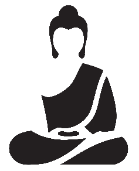
如来的意识遍虚空，因此没有来去，也没有坐卧。
“须菩提，如果有善男子、善女人，把三千大千世界碎为微尘，你认为微尘的数量多不多？”
须菩提说：“非常多，世尊。为什么呢？如果微尘众真实存在，佛就不会说是微尘众了。所以，佛说‘微尘众不是微尘众’，只是取名叫‘微尘众’。世尊，如来所说的‘三千大千世界’不是世界，只是取名叫‘世界’。为什么呢？如果世界真实存在，那么它是一合相。如来说一合相不是一合相，只是取名叫‘一合相’。”
“须菩提，一合相也是不可说的，但凡夫执着于此。”
1．佛说微尘众即非微尘众，是名微尘众。
与上同理。“微尘众”与“非微尘众”都是分别心中产生的相，在没有分别心的境界里本不存在。因此可以说，“微尘众不是微尘众”，也可以说，“微尘众等于非微尘众”，我们只是给它取名叫“微尘众”。
2．世尊，如来所说三千大千世界，即非世界，是名世界。
与上同理。“世界”与“非世界”都是分别心中产生的相，在没有分别心的境界里本不存在。因此可以说，“世界不是世界”，也可以说，“世界等于非世界”，我们只是给它取名叫“世界”。
3．何以故？若世界实有者，即是一合相。如来说一合相，即非一合相，是名一合相。
与上同理。“一合相”与“非一合相”都是分别心中产生的相，在没有分别心的境界里本不存在。因此可以说，“一合相不是一合相”，也可以说，“一合相等于非一合相”，我们只是给它取名叫“一合相”。
一合相：指一切由众多极微分子合成的有形物质，也就是说，这个世界是由极小的根本粒子堆叠而成。
最初佛讲法的时候说，世界是地、水、火、风四大和合而成。这是佛陀出世之前，婆罗门教和其他外道教派已经有的理论。佛最初讲小乘理论的时候就把外道的“四大理论”直接拿来用，说世界乃至包括我们的肉身都是四大和合而成。到后面讲大乘理论的时候才开始讲一合相，说这个世界是由极小的粒子和合而成，和“四大理论”不同。“地、水、火、风”也可以分解为极小的粒子，所以这个世界的真相还是一合相，是由最小的粒子——光子和合而成。
那么佛为什么一开始就不讲真相？第一，因为当时的人难以接受。第二，一个刚出现的理论学说不适合全盘否定历史悠久的学说，这样很容易被其他学派的支持者围剿。因此，佛早期讲的理论很多都是方便法，并不是究竟的理论。随着传法的推进，佛也收了足够多的弟子，也开始形成一定的影响力，之后佛才开始讲大乘理论。但是一部分弟子只学了早期的方便法就离开了僧团，因此也出现了小乘教派，到现在学小乘理论的人还是认为世界是由四大和合而成。
4．须菩提，一合相者，即是不可说，但凡夫之人贪著其事。
一合相也是不可说的，佛的意识里没有妄想、分别、执着，因此也不存在一合相。但是凡夫执着这个世界的构造，所以只能用这种说法来解释。
也就是说，任何事情只要说出来就落分别，但是不说又没有办法传法。凡夫一旦听到法就会以分别心和执着心来理解，所以佛用语言传授佛法的时候一再强调不要用分别心认知世界。因此在《金刚经》里反复地说，“相”即是“非相”，只是取名为“相”。修菩萨道的人，一定要把分别心灭掉，超越相与非相，才能看到世界的真相。

微尘、世界、一合相，这些我们看得见的物质世界，都是众生意识里的分别心和执着心所幻化出来的幻境，在佛的境界里本不存在。
佛问：“须菩提，如果有人说，佛曾经说过我见、人见、众生见、寿者见，你怎么认为？这个人有没有准确理解佛所说的义理呢？”
须菩提回答：“不，世尊，说这样话的人没有正确理解佛所说的义理。为什么呢？世尊说的‘我见，人见，众生见，寿者见’不是‘我见，人见，众生见，寿者见’，我们只是给它取名叫‘我见，人见，众生见，寿者见’。”
佛说：“须菩提，发阿耨多罗三藐三菩提心的人，对于一切法，应该这样知道、这样认为、这样相信和理解，在意识层面上不应产生法相。须菩提，我说的法相，如来说不是法相，只是取名叫‘法相’。”
1．世尊说我见、人见、众生见、寿者见，即非我见、人见、众生见、寿者见，是名我见、人见、众生见、寿者见。
我见、人见、众生见、寿者见：执着有三种境界，分“见、取、执”。
见：就是“我认为”。我认为人应该这样，我认为社会应该这样，有了这个“我见”，就很难接受不一样的理论和现象。所以“我见”是最深层的执着，也是一切冲突的开端。
取：是“我想要”，是贪欲。
执：是控制欲。
在这一段里，佛说的“四见”与“非四见”都是分别心中产生的相，在没有分别心的境界里本不存在。因此可以说，“四见不是四见”，也可以说，“四见等于非四见”，我们只是给它取名叫“四见”。
2．须菩提，发阿耨多罗三藐三菩提心者，于一切法，应如是知，如是见，如是信解，不生法相。须菩提，所言法相者，如来说即非法相，是名法相。
发大菩提心，要成就无上正等正觉的人，也就是想成佛的人，要正确理解分别心，要舍弃分别心，舍弃分别心中产生的一切相，包括“法相”与“非法相”。佛说的“法相”与“非法相”都是分别心中产生的相，在没有分别心的境界里本不存在。因此可以说，“法相不是法相”，也可以说，“法相等于非法相”，我们只是给它取名叫“法相”。

如果有人说：佛曾说过“我见、人见、众生见、寿者见”，那么他没有真正理解佛说的义理。“四见”都是分别心中产生的相，在这之上形成的执着。发大菩提心者，应当努力灭分别心，做到不生一切相。
“须菩提，如果有人以满无量阿僧祇世界的七宝进行布施，如果又有善男子、善女人，发大菩提心者，受持读诵《金刚经》乃至四句偈，为他人讲解，这个功德比前者的财布施还要大。怎样为他人演说呢？不执着于相，如如不动地演说。为什么呢？一切有为法，如梦幻泡影，如露亦如电，应该有这样的认知。”
佛讲完《金刚经》，长老须菩提，还有诸比丘、比丘尼、优婆塞、优婆夷，一切世间天、人、阿修罗等，都生起了无量欢喜心，相信和接受了佛的教法，依此奉行。
1．若有人以满无量阿僧祇世界七宝持用布施，若有善男子、善女人发菩提心者，持于此经乃至四句偈等，受持读诵，为人演说，其福胜彼。
阿僧祇：译为无数，是从梵文里直接音译过来的词。
这里又拿修行和法布施的功德跟财布施的福德进行比较。前面出现过“世界碎为微尘”，“无量三千大千世界”这样的说法，这里说的是“无量阿僧祇世界”。三千大千世界是一个世界，无量阿僧祇世界就是无数的世界。用满无数世界的七宝进行布施，这个福德应该很大。但是后面说“若有善男子、善女人，发菩提心者”，受持读诵《金刚经》，乃至四句偈，还为他人讲解，所得到的功德比前者的福德还要大。在这里重点是“发菩提心”，有大菩提心，发愿普度众生的人，受持读诵《金刚经》，乃至四句偈等，还为别人讲解，这个功德才是真正的巨大。为什么呢？因为没有菩提心的人，所有的行为都是为自己，只为自己的解脱或福报而修行，那么功德就会大打折扣。
2．云何为人演说？不取于相，如如不动。
取：是执着的第二种境界。
如如：指的是真相，或是真理，是不动摇的，永恒存在的，所以叫“如如不动”。
这里讲的是传法人的态度，传法人不应执着于相，包括“法相”与“非法相”，更不应有“认为自己在传法度人的相”。
3．何以故？一切有为法，如梦幻泡影，如露亦如电，应作如是观。
有为法：可以理解为执着。从非想非非想处天的“对妄想本身的执着”开始，对应以下所有世界的执着都可以看作是“有为法”。在我们这个世界里，起了情绪，就会带出欲望，一切因欲望而做的事情都是“有为法”。
梦、幻、泡、影、露、电：这些事物都是瞬息万变的、不恒常的、时有时无的，是不应追求的幻境。
“如是观”中的“观”：是认知、观念。
佛在这一段里要表达的意思是，在执着形成的轮回世界内，一切造作的行为都是虚幻。
4．佛说是经已，长老须菩提及诸比丘、比丘尼、优婆塞、优婆夷，一切世间天、人、阿修罗，闻佛所说，皆大欢喜，信受奉行。
比丘、比丘尼、优婆塞、优婆夷：出家的男性弟子叫“比丘”，出家的女性弟子叫“比丘尼”；未出家的在家弟子中，男性叫“优婆塞”，女性叫“优婆夷”——合称“四众弟子”。
奉行：按照佛的教导修行，还要落实到日常生活中。
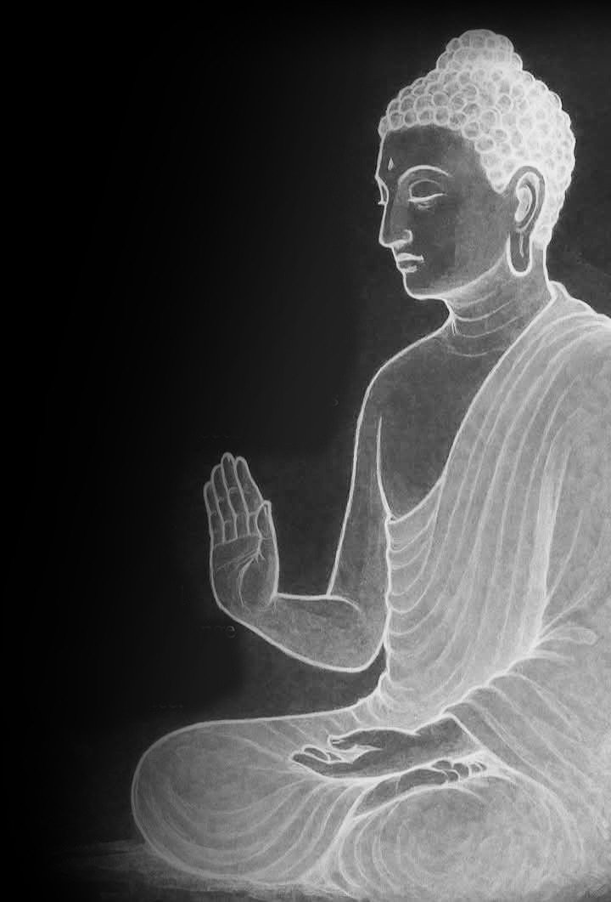
受持读诵《金刚经》，为他人讲解《金刚经》的功德比任何形式的财布施的福德都要大。讲法人为他人讲经时，不应执着于任何相，要如如不动地讲，要把一切造作之想法和行为都看作虚假的幻境。
再一次强调，读本书之前一定要看《坐禅1》和《坐禅2》，尤其是《坐禅2》中的“分别心”部分。在《金刚经》中，佛反复地说“相”与“非相”都是分别心中产生的幻，只是给它取名叫“相”。但佛并没有把九种分别心讲清楚，只是告诉大家，修行人应该对“一切相”有如此这般的认知。
实际上佛经有很多内容都是如此，最初编撰佛经的目的是让大家信佛。真正的修行在后面，根据每个人不同的业和根器选择适合的法门，在修行过程中遇到的境界也各不相同，因此没有办法对大众直接讲太多实修的部分。很多人把佛经里的内容当做世界真相的全部，从一个了解真相的人的视角看，佛经只讲了世界真相的很小一部分，它只是把有缘人引入门而已。
目前市面上流通的大藏经就有四套 ：一套是汉传的大藏经，现在最全的是《乾隆大藏经》，还有《高丽大藏经》《藏传大藏经》，南传的《巴利文大藏经》。一个人如果不实修，只是研究佛经，那么就算把四套大藏经全部背熟，那也只是原地踏步，甚至还会滋长贡高我慢心。我们学习佛经、研究佛经，是为了理解佛所说的世界真相。理解之后就要真实地修行，真正做到与佛同行、与佛同愿，才能与诸佛心心相映，在修心和消业方面不断进步。
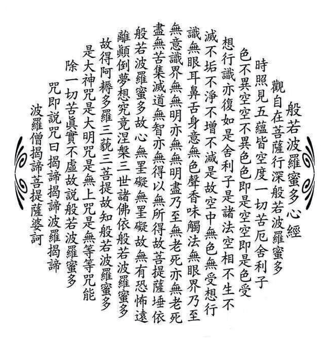
最后祝愿所有有缘人，此生业尽时都能证道，求往生者得往生，求解脱者得解脱。
《心经》——全称《般若波罗蜜多心经》。
此经文旨，原出于大部《般若经》内有关舍利子的各品，即是秦译《大品般若》的〈序〉〈奉钵〉〈习应〉〈往生〉〈叹度〉五品（《大品般若》卷一至卷二），唐译《大般若经》第二分初〈缘起〉〈欢喜〉〈观照〉〈无等等〉四品（《大般若经》卷四〇一至卷四〇五）。各品所说的内容是佛和舍利子问答般若行的意义、功德，此经即从其中撮要单行。
公元627 年，玄奘法师启程去往印度。在离开唐朝前，路经一座寺院时遇到一位生病的老和尚。玄奘法师心生怜悯，便留在该寺院照顾这位老和尚。老和尚病愈之后，为了报答玄奘法师，将梵文《心经》传授于他。后来西行的路中，玄奘法师每次遇到困难都会背诵《心经》，每每都能化险为夷。
有一次在印度，玄奘法师遇到一群外道，要烧死活人献祭他们的神。这些人看到玄奘法师这位外国僧人，就把他抓住，试图烧死玄奘法师。玄奘法师就对这些外道们说：他作为僧人，要在死前把当天的功课做完。外道们同意。玄奘法师自己登上祭坛，盘腿而坐，默念《心经》三遍。届时狂风大作，外道们惊恐，不敢伤害玄奘法师，遂放其离开。
公元645 年，玄奘法师带着六百五十七部佛经回到长安。
公元649 年，玄奘法师开始译经，最先翻译的就是这部《心经》。
《心经》的“心”字，有两种解释：
第一种解释叫诸佛之母。是《大般若经》之心要，是从《般若经》的核心内容中概括而来，也可以说是《八万大藏经》的浓缩版。《心经》把佛法理论中最核心的内容浓缩在了二百六十字当中，用最为简练的语言准确表达了佛法的真谛。
第二种解释叫真心。此真心是万法之始、众义之宗；亦是诸佛所证、众生所迷；就是指众生的最底层意识——阿赖耶识。所有的妄想、分别、执着，众生的一切苦、业的轮转，都从阿赖耶识里产生。
“经”字，在梵语里叫修多罗，译为契经；在汉语里是路径的意思。所以“经”便是去往真理的路，所有佛经都可以说是去往真理的路。
观自在菩萨，行深般若波罗蜜多时
先讲“观自在菩萨”，在汉地也叫“观世音菩萨”，是西方三圣中的第二位，阿弥陀佛的大弟子。不过，他到底是倒驾慈航的佛，还是等觉菩萨——这种事情没必要较真，我认为都属于故事。
但是有一点大家要明白：自性——阿赖耶识当中，没有妄想的时候叫“佛”。佛只要自己主动起一个妄想，就叫“等觉菩萨”。佛可以自由切换等觉菩萨和佛两种状态。而真正的等觉菩萨，他的妄想和某一段业联系在一起，只有消了相应的业才能灭这个妄想，然后可以成佛；只要业还在，就不能成佛。
真正的传法需要三类人同时发力：
第一类人是给自己记忆中的所有众生提供加持力的佛和高级别菩萨。简单来说，加持力就是帮助修行人快速提升的一种力量，它背后也有运作的逻辑——请参考《坐禅2》中关于加持力的部分。
第二类人是给特定的众生提供帮助和引导的菩萨。菩萨可以同时给很多人显化身或者托梦，用各种方式进行干预和引导。虽然不是以报身形态直接接触，但还是属于点对点的帮助。
传法既需要第一类人给所有众生同时加Buff，也需要第二类人给特定的人提供适合他的帮助和干预，也就是通常所说的方便法。
第三类人就是带着业、以报身形态进入轮回消业和度人的菩萨和罗汉。大部分情况下菩萨、罗汉们都会带着业下来，一边消业，一边度和自己有缘的众生。也有个别菩萨在没有业的情况下乘愿再来，和没有业缘的众生结新缘后再度。其中，大众传法通常由四大职业的人来做，因为大众传法难免会和没有业缘的众生再结新缘，这就需要有平等普化心或者同体大悲心。
真正的传法需要这三类人同时发力才能正常进行，少任何一类人都难以推进。
有人问，为什么佛菩萨不能用显化身的方式来度人，非要投胎来？
首先，佛是已经消完业的人，所以不会用报身进入轮回。大部分情况下佛会一直提供加持力，有必要的时候也会用显化身的方式帮助人。至于菩萨，因为业没有消尽，需要进入轮回来消业，同时度和自己有缘的人——这是菩萨必须要做的事。
对于凡夫而言，一个从来没有出现在其面前的人，光靠意念传递信息的方式想让其改变，有很大的局限性。有些人会认为自己产生了幻觉，甚至有些人会认为是天魔外道在勾引自己干什么坏事。
尤其是现实生活中，遇到非常重要且紧急的事情需要决策的时候，这种虚幻的干预很难起效。因为人毕竟生活在现实当中，重要的决策还是根据现实利益来做。哪怕菩萨用显化身或者托梦的方式进行干预，大部分情况下人们很难接受。唯有深信佛法，且对佛理有深刻理解的人；尤其是知道诸佛同体的真相，和发心纯正的人，才有可能会接受这样的干预。
修行必须得有人引导，除了示范性的操作和具体指导之外，鞭策和鼓励都是必须的。所以投胎到人间，带着报身消业和度人的菩萨、罗汉也是传法中不可或缺的一环。
因此，真正的传法是这三类人同时发力的情况下才能推进。
关于观世音菩萨到底有没有业，我也不好说，我认为他基本没有业。每次出去传法，如果前期造了一些业，变成了等觉菩萨，到了传法活动即将结束的时候，会把业消完，然后撤出——这样就回到了他原来的法身境界。所以他到底是等觉菩萨，还是倒驾慈航的佛，对于凡夫来说并不重要。
还有一个问题，就是菩萨的搭档体系，观世音菩萨和大势至菩萨是一对搭档。当一人带着业进入轮回的时候，另一人就会在法身地提供保护和指导，这样才能保证进入轮回的人顺利地消业和修行。
还有，搭档会一起指导凡夫徒弟。从凡夫徒弟的视角看，拜的师父是一对搭档中的一人，因为一对搭档不会同时进入轮回。但是对徒弟的指导却是二人一起做，一人在轮回内带徒弟一起修行，另一位没有投胎的人会在法身地提供保护和指导。就因为是法身地做的指导，可以不间断地提供加持力和帮助，有些时候这种法身地的指导比在人间带着报身修行的师父还要有效和直接。
对于凡夫而言，之所以能够得到法身地菩萨的直接加持和指导，都是因为拜了投胎到人间的再来人为师。如果觉得法身地菩萨更厉害，从而对上师产生轻慢心，那边的加持马上就会断。
组成搭档还有一个好处，就是做事的时候会有互补。观世音菩萨和大势至菩萨是性格不同的人。要知道，菩萨在法身地是没有性格的，但是一旦带着业投胎到人间，就会带出凡夫时期的性格。
观世音菩萨的性格是勇猛刚毅，更倾向于男性；大势至菩萨的性格是善忍柔和，是能引发别人同情心和保护欲的性格，更倾向于女性。和他相处就会觉得这个人太善良、太纯洁了，希望能保护他的纯洁——大势至菩萨是能引发别人这种欲望的人。
当两种不同性格的人一起做事的时候就可以互补。一个人下去做事，按照自己的性格行事的时候，另一个人就可以做到一定的节制，控制他不要过分，有了这样的互补，做事就比较顺利。
尤其是人王职业，师父会认真考察两个人的性格，让两个性格不一样的人结为搭档。一个人善断，属于行动派；另一人善谋，心思缜密，这样两个人就可以做到互补。
善断的人适合打天下，善谋的人适合坐天下。两个性格互补的人一起做事就非常顺利，可以应对大部分突发情况。如果是两个性格一样的人一起做事，往往会闯出祸来。
这是在漫长的传法过程中总结出来的经验。
“行深”就是深入修行的意思。
什么是“般若波罗蜜多”的相貌？在《道行般若经》里讲到，“空、无相、无愿”就是般若波罗蜜多的相貌。
“空”与妄想相对，有妄想就叫“无明”，没有妄想就叫“明”或者“空”。有分别心的时候叫“有相”，没有分别心的时候叫“无相”。“愿”就是执着。所以“般若波罗蜜多”指没有妄想、分别、执着的状态，也就是佛的状态。
还有一种比较普及的解释：“般若”指智慧，“波罗蜜多”指彼岸，“般若波罗蜜多”就是去往彼岸的智慧。
我个人认为，用“空，无相，无愿”来解释“般若波罗蜜多”才是佛的原意。
菩萨的智慧是什么？菩萨的智慧和凡夫的智慧不一样。凡夫的智慧叫知人者智——识人的眼光，还能读懂别人的心思，就叫有智慧。菩萨的智慧是可以消业的智慧，破解一些很难解的业的时候才真正展现出菩萨的智慧。
菩萨六度法中的“布施、持戒、忍辱”都和业相关。布施是多造善业给自己积福报；持戒是不再造恶业；忍辱是当恶报来临时选择忍，不再进行报复，让业的轮转到这里结束。
“精进”是修行人的一种态度，就是坚持不懈，努力做的意思。菩萨要努力地推进其他五种修行。
“禅定”就是灭妄想、分别、执着的过程，就是灭习气的修行方法。“修行”二字分开来看——“修”指修心，是灭妄想、分别、执着和灭习气的过程；“行”指消业的过程。
“般若”指菩萨消业的智慧，同时也是度人的智慧。因为要把人带出轮回，就先要帮其消业，所以这也是一种智慧。
照见五蕴皆空，度一切苦厄。
下面两个字，叫“照见”。那么“观”和“照”的区别是什么？“观”是在注意力上用功，把注意力放在一个地方叫“观”。“照”是在第七识分别心上用功，用分别心同时观察所有的执着部分。
小乘的四念处修行（观身、观心、观受、观法）就是在分别心上用功的修行法门。
观身——观察自己的身体，坐着是坐着，躺着是躺着，要如实地知道。
观受——观察所有的感受，包括皮肤上的触觉和冷暖觉，还有视觉、听觉、嗅觉、味觉等五根带来的所有的感受。
观心——心可以看作意识本身。要观察自己的所有心理变化，包括情绪、注意力、文字妄想。
观法——法是妄想，世间一切都可以称之为“法”。因为世间一切都是妄想和合而成的幻境。法包括内心的妄想、我们的肉身，也包括外界的器世界和虚空。
对于凡夫来说，“照”是用分别心同时感知一切信息。
菩萨的“照”是指用妄想来认知整个世界。菩萨的妄想比阿罗汉的分别心境界高，但是在我们的语言体系里已经没有比“照”更高端和贴切的词语，所以只能用“照”来描述菩萨的境界。
“五蕴”：“色、受、想、行、识”。在这里“色”指所有物质世界，包括我们的肉身和外界的器世界，也包括虚空，总之我们能观察到的一切统称为“色”；“受”是我们的感知能力，是六根的觉受。这里的六根不是“眼、耳、鼻、舌、身、意”，“意根”并不是感知世界的根器，所以要去掉“意”，用身根的触觉和冷暖觉来代替。用以上六种感知世界的根器感受到的所有感觉叫“受”；“想”是六识执着；“行”是第七识分别心；“识”是第八识里产生的妄想，是意识最深处的妄想，也是妄想的最小单元。用电脑来说就是最底层的代码0和1。我们看到的一切都由这最小的妄想和合而成。
关于“行”，还有另一种解释是“业”。这是从我们凡夫的视角来看的世界，在这个世界里人与人之间的关系都可以解释为“业”。
“苦”指苦恼，包括肉身的痛苦和心理上的痛苦，还有人生当中遇到的各种不好的境遇，也叫“人生八苦”。总之，能让人痛苦的一切感受和事件统称为“苦厄”。所以“度一切苦厄”就是消灭一切苦的意思。
舍利子
“舍利子”是人名——舍利弗。“舍利”是他母亲的名字，“某某人之子”是古印度的一种取名方法。
据说佛的十大弟子中，舍利弗是智慧第一的人，他十六岁的时候就能把一些外道的理论讲得非常透彻。邻村还有一个人叫目犍连，是佛的十大弟子中神通第一的人，此二人是好友。舍利弗和目犍连曾一起拜了一位外道上师学法，舍利弗很快就学会了外道的基本理论，但是他觉得这个外道的法并不能给他带来解脱和更高层次的修行体验。
当时释迦牟尼佛在王舍城的竹林精舍修行和传道，每天会让弟子们入城托钵乞食。舍利弗遇到了出来乞食的马胜比丘，被他的庄严法相和端正威仪所折服，就向马胜比丘请教。马胜比丘给舍利弗讲了十二因缘法，舍利弗听完非常欢喜，便带着好友目犍连和他的二百五十名弟子一起去向佛陀请教，听完佛陀的讲法，舍利弗和目犍连当即向佛陀皈依。舍利弗作为智慧第一的弟子，也是辩才无碍，后来经常代表佛的僧团去和外道进行辩论。
色不异空，空不异色，色即是空，空即是色
“色”就是指物质世界，包括我们的肉身和外部的器世界，以及虚空。“色不异空”的“空”不是指虚空，是“自性本空”的“空”。这里的“自性”不是指阿赖耶识，是指本体。妄想本身没有本体，没有本体的事物可以看作为“空”，所以叫“自性本空”。
“色不异空”不是说色消失后变成了空，而是说色空不二。阿赖耶识当中什么都没有的状态就叫佛，在这个状态里忽然产生了妄想，妄想越来越多，最后成了“色”。所以色是从“自性本空”的“空”当中产生，色本身没有本体，是由没有本体的妄想和合而成，所以它的本质也是空，因此叫“色空不二”，也叫“色不异空”。
受、想、行、识，亦复如是。
五蕴当中其他四蕴也和“色”一样，都是从“空”中产生，它们的本质也是空。
舍利子，是诸法空相
我们看佛经，首先要知道这部佛经是给谁讲的，根据受众不同，佛陀讲不同境界的法。在这里，舍利弗是阿罗汉，所以《心经》是针对阿罗汉讲的法。
“诸法”是什么？对我们来说，世间一切都可以称之为“诸法”。我们的肉身、器世界、虚空，还有我们的一切心理活动和众生之间的业，都属于“诸法”。也就是说，“诸法”是妄想、分别、执着的统称，因此也叫“万法”。
三法印里有一条叫“诸法无我”，讲的就是世间一切事物和现象当中不存在“我”这个概念，佛法认为“我”这个概念本身就是妄想，是要灭掉的障碍。
“相”是什么？“相”由分别心产生，通常佛经里出现“相”字的时候，我们要知道这是指分别心。在这里“诸法”是妄想、分别、执着的统称，是有相。有相和空相相对，由分别心产生，在平等心的境界里，有相等于空相。在无分别的菩萨境界里，有相和空相都是妄想和合而成的幻，所以诸法的有相和空相一致，叫“诸法空相”。
不生不灭，不垢不净，不增不减。
如果按照字面意思来解释，“诸法”——妄想、分别、执着，它不生不灭，不垢不净，不增不减，如此理解就把《心经》看低了。
诸法本来就已经生出来了，它怎么能叫“不生”呢？所以在这里“不生不灭”是指生相和灭相，说的是诸法的生相与灭相一致。在没有分别心的菩萨境界里，生相与灭相都由妄想和合而成。
“垢”也叫“染”，“染”字在佛经里经常出现，“染”与“净”相对，染相与净相本质上相同，在没有分别心的菩萨境界里，染相与净相都由妄想和合而成。
“不增不减”亦是同理，诸法本来就是众生的妄想，妄想可以变得越来越多，也可以减少，那怎么能说“不增不减”呢？因此这里的“不增不减”指的是增相和减相，此二者本质上相同，在没有分别心的菩萨境界里，增相和减相都由妄想和合而成。
如果不以分别心的境界来解释“诸法”与“空相”，用更高的菩萨的妄想境界来解释，诸法就不能叫空相，而叫“诸法本空”。那么下面的“不生不灭，不垢不净，不增不减”就不能成立。在菩萨境界里应该叫“无生”。
是故空中无色，无受、想、行、识
所以，本来这个“空”当中就没有“色、受、想、行、识”五蕴。
无眼、耳、鼻、舌、身、意
这是六根。六根是用来感知外部世界的器官，是感知能力，所以“意根”不能算作根。真实的六根是眼根视觉、耳根听觉、鼻根嗅觉、舌根味觉、身根触觉和身根冷暖觉。
那为什么佛经里要把意根当作一个根放进去？
《心经》是由大势至菩萨扮演的玄奘法师所翻译，难道他就不知道六根吗？我认为他知道，但是照旧翻译。因为佛经一开始就故意留下一些小的漏洞，给真正实修的人去发现。
如果你是实修的人，真的修到那个境界再去看佛经，就会发现一些不大不小的错误点。但是这些小小的错误不影响佛法整体的真实性，只是讲的时候会故意留一些漏洞。就像讲故事的时候会埋伏笔一样，这个伏笔要读者自己去发现。然后再倒回去从头开始看，就明白这个伏笔很早以前就已经埋下了。
所以意根不能当作一个感知器官和感知能力来看，它是我们的心理作用，是文字妄想、注意力、情绪等一切执着的统称。但是如果把“意”当作根来看，那么“意”和注意力产生矛盾，因为注意力创造出了外界的尘、中间的根和里边的识。六尘、六根、六识合称“十八界”，在这里外界的尘是感知的对象，而不是感知的器官。
我们只要动用注意力，它至少会在一个根器上起作用。比如我把注意力放到眼睛上去看，那么外界的尘会反映到我的眼识里。可以说注意力同时创造出了尘、根、识三界。
无色、声、香、味、触、法
“色、声、香、味、触”，这是与六根对应的六尘。
“法”就是妄想，意识层面上的思维，与意根相对应。但是“意”不是感知外部世界的根，因此“法”也不是外界真实存在的尘；“法”是外界的尘通过我们的根反映到识中，再根据这个识进行一次意识层面上的加工之后得出的结果。
无眼界，乃至无意识界
“眼界”不光是指眼睛看到外界，眼睛看到外界叫“色尘”，加上眼根、眼识，这三个统称为“眼界”。
六根、六尘、六识统称为十八界，在这六识背后用来思考的那个意识就是“意识界”。这里包括了分别心，还有执着中注意力以上的部分，就是从情绪开始到四禅和无色界定为止，与之对应的各项执着。
无无明，亦无无明尽，乃至无老死，亦无老死尽
“无明”是什么？有妄想就叫“无明”，那“无无明”就是没有妄想。“无无明尽”，准确的解释是妄想的生灭尽了。妄想的生灭——妄想生起又消失，又生起又消失……如此不断重复，这种妄想生起又消失的状态灭尽了。
“无老死”是字面意思，“老死”——生、老、病、死中的老死。这里“无明”到“老死”，是把十二因缘法中间十个省略掉，只留开头和结尾之后的表达方式。
十二因缘法是什么？
“无明”是第一个；“无明缘行”，“行”是第二个；“行缘识”，“识”是第三个；“识缘名色”，“名色”是第四个；然后是“名色缘六入，六入缘触，触缘受，受缘爱，爱缘取，取缘有，有缘生，生缘老、死、忧、悲、苦恼”。
在这里“无明”是妄想，自性当中没有任何妄想的时候叫佛，是“明”的状态；自性当中产生妄想，佛就跌落为菩萨，是“无明”的状态。“行”是分别心，“识”是第六识，是执着。
“名色”，准确地讲从二禅天开始出现，只有情绪的三禅天还没有名色。从二禅天开始，意识层面上先产生“名”，然后在外部产生与之对应的“色”。对于我们这些人间的凡夫来说，我们出生之前外界的色世界已经存在。在我们成长的过程中，我们的父母和老师会不断地告诉我们，这个叫什么，那个叫什么，从而在我们的意识里建立一个个名相。
实际上，众生从三禅天跌落到二禅天的时候，意识里会先产生“名”。我想要什么，我希望这个世界有什么。这样的名相会先产生，之后外界就会出现与之对应的物质。整个宇宙都是在我们自性当中产生的妄想，所以我们心里想什么，外界就会产生什么，天界就是这样的世界。
然后是“名色缘六入”，“六入”就是六根，六种感知外部世界的器官。外界有了“色”，物质世界开始产生，我们也就有了感知物质世界的根。
“六入缘触”，外尘和根相触，就是接触。
“触缘受”，根尘相触就会产生“受”，就是我们的觉受。我们看到外界的事物，视觉上会产生觉受；听到外界的声音，听觉上产生觉受；身体碰触到外界的事物，触觉上产生觉受。
“受缘爱”，“爱”就是贪爱之心，人有了各种觉受后，就会出现喜欢和讨厌的情绪，喜欢和讨厌，爱与恨，本质上都是执着。
境界越低的人爱憎越强烈，经常会说“我喜欢这个，我讨厌那个，我喜欢这样的人，我讨厌那样的人”等话。修行境界高了，少了很多执着，爱憎之心也会越来越淡，烦恼也会减少。
“爱缘取”，取和舍相对应。喜欢的感受要取，讨厌的感受要舍，或者远离。取可以看作是追求。
“取缘有”，“有”既指主体，也指客体，也包括“取”这种行为。主体是我，是能取的主人公，客体是外境和外界的事物，是所取的对象。
“有缘生”，“生”就是我们这些凡夫的出生，也可以理解为产生或出现。二禅以下的“生”就从“名色”开始。有了“生”，随之而来的就是“老、死、忧、悲、苦恼”。
以上是十二因缘法。
无苦、集、灭、道
这是四谛法。佛经里说，佛在鹿野苑对五比丘初转四谛法轮，四谛法是佛最初讲的内容。佛陀传法就从我们的人生观开始讲起。我们的人生就是痛苦的集合体，佛陀就从我们能够真实感受到的痛苦开始讲。如果一开始就讲宇宙观，大概率没有人会认真听，当时的人大部分都是文盲，知识储备并不多，对世界的认知也很有限。只有从人生观开始讲起，告诉人们这个痛苦是怎么来的，为什么要灭，怎么灭，如此才能摄取众生，吸引人来听法。
不光是佛经，佛陀讲法也要提前经过教团队的人编排。一开始讲什么，后面讲什么，内容的深度和顺序都是经过设计的剧本，不是佛陀个人自由发挥的结果。
四谛法，第一个是“苦谛”，对于苦也有多种解释，最普及的说法是人生八苦。
生、老、病、死四个苦。
生苦，我们出生的时候也是苦的，大部分人出生前后一两年都没有什么记忆，所以记不得出生时的苦。实际上人在羊水里泡着的时候，皮肤非常细腻，刚出生的婴儿被毛巾一裹，当时就能感受到很大的痛苦。第一次呼吸也痛苦，被产道挤出来的过程也痛苦，只是大部分人都不记得而已。等哪一天我们修行到了一定境界，能回忆记起在娘胎里成长到出生的整个过程，我们就会知道——人生真的是从痛苦开始到痛苦结束，而且不光是孩子痛苦，分娩的母亲也痛苦。
老苦，衰老肯定是痛苦的，没有人会否定衰老的痛苦。衰老不仅是外表的老化，整个身体机能都在衰退。只要是轮回内的众生，都不能阻止衰老的进程，只是衰老的速度不同而已。
病苦，我们都知道疾病是痛苦的，那么什么原因导致疾病呢？有三个原因，第一个原因是恶业。众生在生死洪流中轮转，每一世都在造业，其中有善业，也有恶业。通常来说，只要不是修行人，恶业的增长速度会比善业的增长速度快。当恶业积攒到一定程度就会带来各种疾病。第二个原因是不好的生活习气。包括喝酒、抽烟、吃肉等等，很多人不相信因果，也有些人知道这些习气不好，但控制不了自己的欲望。当不好的习气对身体的损伤达到一定程度的时候人就会生病。第三个原因是心态。内心阴暗，有太多的欲望和不好的情绪，身体也会生病。
死苦，绝大部分人死亡的时候都很痛苦，不光是死亡的过程痛苦，死亡之前和病魔做斗争的时候也很痛苦。只有少数的修行人，提前把此生带出来的恶报受完，几个月甚至几年前就知道自己的时日，做好准备，坦然面对死亡，或者安然等待往生。只有这样的死亡才是没有痛苦的死亡。
普通人不仅死的时候痛苦，死后意识还没有完全离开身体，会在身体旁边徘徊二十四小时，这个时候还能感知到身体的各种觉受，此时把尸体冷藏或者火化都会让死者感到很大的痛苦。
除了生老病死之苦，佛陀说众生还有怨憎恚苦、爱别离苦、求不得苦、五蕴炽盛苦。
怨憎恚苦，讨厌一个人也是很痛苦的事情，相信大部分人都有过经验。我们在社会上生活，周围不可能全是我们喜欢的人，肯定也有讨厌的人，也会和人发生摩擦。这个时候我们就会升起愤怒的情绪，对他人产生憎恨感。不光是当时痛苦，就算事情过去了，每每想起当时的事情还是很气愤，这都是苦。
爱别离苦，和喜欢的人分开是痛苦，这都不用解释。
求不得苦，我们对这个世界有很多希求和欲望，包括名誉、财富、爱情、健康等等，想要却得不到，我们就会感到痛苦。
五蕴炽盛之苦，五蕴是色、受、想、行、识，也是妄想、分别、执着。炽盛的五蕴，在意识层面上会给我们带来巨大的痛苦。我们的肉身是六根集合体，也是意识的一部分。
四谛法中第二个叫“集谛”。
这个“集”指产生痛苦的原因，就是十二因缘法里内容。“苦”和“集”是因果关系，集是因，苦是果。
第三个叫“灭谛”，灭就是熄灭之意。把苦的根本原因，也就是无明——最终极的妄想，最底层的那个初妄给彻底灭掉，那么一切苦全部消失，会达到涅槃寂静的境界，也叫成佛。
最后是“道谛”，“道谛”有多种解释，概括起来指的都是灭掉妄想、分别、执着的方法，也就是修行方法。通常解释为八正道，正见、正思维、正语、正业、正命、正精进、正念、正定，合称为八正道。也可以解释为修行次第，凡夫九禅，阿罗汉的九禅，包括菩萨的六度法和十地，全部合起来叫“十地十八禅”。
无智亦无得
“智”是般若，“无智”不能简单解释为没有智慧。从凡夫视角看，佛的智慧称之为“法界体性智”，也叫“无漏智”，是最圆满的智慧。但是从佛的视角看，没有妄想是正常态，所谓的智慧也是妄想出来的幻，所以佛的境界里没有称之为“智慧”的东西，也没有任何可以得到的东西。
《圆觉经》和《金刚经》里都说，“一切贤圣皆以无为法而有差别”，说的是佛和菩萨的境界高低是根据妄想的多寡来分。妄想越少，境界越高，智慧也就越高，没有任何妄想的时候称之为佛，也就是拥有圆满智慧的状态。众生本来都是佛，是有了妄想之后遮住了本有的智慧，这是大乘佛法的核心观点。
“无得”，没有可以得到的东西。佛法的修行过程是不断舍弃的过程，是灭掉妄想、分别、执着的过程，并不是从外边获得什么，或者从你的内心产生了什么，而是灭的过程。
以无所得故，菩提萨埵，依般若波罗蜜多故，心无挂碍。无挂碍故，无有恐怖。远离颠倒梦想，究竟涅槃。
“以无所得故”，因为没有任何可以得到的事物。
“菩提萨埵”——菩萨，也叫觉有情，有妄想就叫菩萨。自性当中出现第一个妄想，就叫等觉菩萨；再出现第二个妄想，叫十地菩萨；再出现第三个妄想，叫九地菩萨。以此类推，直到初地菩萨。
菩萨叫“觉有情”，觉悟有情众生，就是度人。菩萨要自度度人，自己修行的同时还要度和自己有缘的所有众生。为什么要度人，请看《坐禅2》中的详细解释。只顾自己修行，不愿度人者，理论上最多能成为阿罗汉，但是实际上连阿罗汉都成不了。因为不发大菩提心，不愿意度有缘众生的修行者是无法遇到再来人传授四禅以上的修行方法的，所以想解脱，必须要发大菩提心，必须有度人的真实行为才行。
“挂碍”，简单来说就是执着，能妨碍你成佛的一切东西都可以称为挂碍。
“恐怖”，这是一种情绪。恐怖之前是欢喜心，当我们的欲望得到满足的时候，我们就会升起欢喜心。欢喜过后我们又会开始担心失去，这个时候就会产生恐惧。
“无挂碍故，无有恐怖”，没有任何执着，也就不会有恐怖这种情绪。
“颠倒梦想”，也可以叫“颠倒妄想”。我们凡夫的第一个颠倒妄想，就是认为肉身是真实的自己。事实上，我们所看到一切都是我们的梦境。
相信所有人都做过梦，我们的梦境也是一个完整的世界，我们都知道梦境是幻，但在梦里我们很难察觉到自己在做梦。如果在梦里待的时间足够长，我们还可以在梦境里探索，发现梦境的物理规律。我们的梦境是无边广阔的，根本找不到梦境的边界。
但是如果有一个观察者观察另一人做梦，那做梦者创造的梦境世界，根本就没有离开过他的这个大脑位置，一切都是在做梦者意识里产生的幻境而已。从观察者的视角看，做梦者的梦境世界根本就不存在。
修行人修行到一定程度之后，梦中能觉察到自己在做梦，这叫清明梦。在梦境里还可以控制自己自由飞翔，只不过修行人不应该追求这种虚幻的游戏，所以不建议在做梦这件事上耗费精力。
《圆觉经》里说，“知幻即离，不作方便，离幻即觉，亦无渐次。”修行人知道了这个世界是幻境，是自己的妄想、分别、执着和合而成的“颠倒梦想”，那就要努力修行，灭除一切妄想，回到觉悟的状态当中。
三世诸佛，依般若波罗蜜多故，得阿耨多罗三藐三菩提。
“三世诸佛”，过去的佛、现在的佛和未来的佛，全部都统称为“诸佛”。在佛的境界里没有时间，用“三世”这个词是针对凡夫的方便说法。
假设所有的众生最终都会成佛，那么“三世诸佛”是所有众生的统称。那么这个世界只有两种众生，一种是佛，一种是非佛，也就是目前还没有成佛的众生。而一切众生都是“依般若波罗蜜多故，得阿耨多罗三藐三菩提”，就是按照空、无相、无愿这个方法，消灭妄想、分别、执着之后，最终成佛。
“阿耨多罗三藐三菩提”拆开来解释，“阿耨多罗”译为无上，“三藐三菩提”译为正遍知，合起来就是“无上正等正觉”的意思。在佛经里，佛有十个称号——如来、应供、正遍知、明行足、善逝、世间解、无上士、调御丈夫、天人师、佛世尊。在这里正遍知就是“正确遍知世间一切”的意思。佛有两种品性，全知和全善，正遍知就是全知的意思。
故知般若波罗蜜多，是大神咒，是大明咒，是无上咒，是无等等咒，能除一切苦，真实不虚。
“般若波罗蜜多”的相貌是什么？是空、无相、无愿。“咒”是密语，为什么咒语不用我们常用的词句，而是稀奇古怪的字和音？首先我们要知道，佛菩萨的意识遍虚空，所以我们念咒的时候，就会链接到咒语背后的那位佛菩萨。如果咒语是我们平时常用的词句，从佛菩萨的角度来说，怎么判断念出咒语的人是有意为之，还是无心而为，要不要给加持，这些都很模糊。
因此故意用我们不常用的字和音写成咒语，这样一来，只要有人念咒，那肯定是专门念的，并不是无意间说出来的，佛菩萨就可以关注到念咒之人。
咒有善咒和恶咒之别。为自己和他人的利益而念的咒叫善咒，比如生病时念的《药师咒》，还有保护自己和他人的《楞严咒》等。以害人为目的的咒叫恶咒。佛陀在世的时候就有一类修行人叫咒师，有些咒师用咒语帮助人；而有些咒师是专门害人，还以此牟利。佛陀曾禁止弟子们修习恶咒。
咒的发动原理是什么？首先，咒是链接咒语背后的佛菩萨或者某些神的密语，可以请这些大神帮助，达到某些目的。其次，咒语是根据持咒者和闻者的心态和发心来驱动。
比如《大悲咒》，大家都知道，《大悲咒》是观世音菩萨的咒语，有祛病安神的功效，但是也有一定的杀伤力。如果念咒的人带着恶念来念，闻咒的众生心中也有恶念，那么两者感应之下，闻咒的众生有可能会受到伤害。有些人在山上念《大悲咒》，山中有不少我们看不见的其他众生，这些众生未必都是善类，所以有些众生会受到伤害。如果闻咒的人心中没有恶念，那么念咒的人就算以恶念来念，也不可能伤到闻咒的人。
“大神咒”，“神”指的是有效果的意思，“般若波罗蜜多咒”是有实际功效的、可以灭除烦恼或者驱除外魔的咒，用这个“神”字来表明。
“大明咒”，“明”是破除烦恼的意思，就像太阳照破黑暗。用这个咒语可以破除一切愚痴和烦恼。
“无上咒”，没有比这个咒更高的咒。
“无等等咒”，没有咒和“般若波罗蜜多咒”一样，也就是说“般若波罗蜜多咒”是最高端的咒语。
下边是咒语本身：
故说般若波罗蜜多咒，即说咒曰：揭谛揭谛，波罗揭谛，波罗僧揭谛，菩提萨婆诃。
在梵文里“揭谛”是去或者度的意思，“波罗”被译为彼岸，所以“波罗揭谛”就是度到彼岸去的意思。
“僧揭谛”，“僧”在梵语里指复数，是众人的意思。所以“波罗僧揭谛”译为普度众生一起去彼岸。
“菩提萨婆诃”，“菩提”是觉、是智，无上佛果叫菩提。所以菩提等同于成佛的意思。
“萨婆诃”译为速疾或者速得，所以“菩提萨婆诃”就是快速成佛的意思。
全部咒语翻译过来如下：
去吧，去吧，去往彼岸吧，
普度众生，一起去往彼岸，
早成佛果吧。
咒在五不翻中属于秘密不翻，但是这个咒语用的所有词在梵文里都有明确的含义，所以可以翻译过来。只不过我们既然是持咒，那么还是应该念梵语原文，而且知道咒语的含义后再持，更容易得到感应和佛菩萨的加持。
以上是《心经》的全部解读。